着せかえ工房 使用手引書
着せかえ工房は、Unity で使う道具です。ほかのアバター用の衣装を、自分のアバターに合わせて着せます。
- 版: {{VERSION}}
- 日付: {{DATE}}
はじめての人は、「はじめに」、「Unity の基本の操作」、「入れ方」、「はじめての練習」の順に読みます。買う前の人は、「できること図鑑」で、できることと苦手なことを確かめられます。
この手引書の読み方
- 画面に出る名前は、［変換］のように、かっこで囲んで書きます。
- 手順の番号のよこにある「できた」を押すと、読んだ印が付きます。
- 印は、いま読んでいるブラウザにだけ残ります。
- 写真を押すと、大きく見られます。
目次
はじめに
できること図鑑
- 3 つ選んで、変換するだけ
- 体型や頭身の違うアバターへ
- 着せたあとを、自動で確かめる
- 動いたときの服
- 体と服が一体のアバターにも
- 一部だけ、設定を変える
- 仕掛けや揺れ物も、引き継ぐ
- 安心して試せる
- 苦手なこと
- 悩みから探す
入れ方・はじめての練習
画面の説明
困ったとき・言葉・クレジット
やりたいことから探す
はじめに
着せかえ工房でできること
着せかえ工房は、Unity で使うものです。ほかのアバター（3D のキャラクター）用の衣装（アバターが着る服）を、自分のアバターに合わせます。
頭身の違うアバターにも、衣装を合わせられる。
背が低くて頭が大きいアバターにも、衣装を着せたい。体に合うように、形を自動で直します。
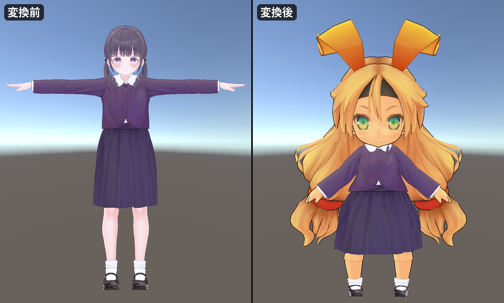
左が変換前、右が変換後です。変換後の脚は、仮の肌（元の服を隠したところに出す、肌の色の面）で、おぎなっています。仮の肌は、試しの機能です。かかった時間は、およそ 30 秒でした。測ったときのようすは、下の「かかる時間」にあります。
くわしいやり方は、「はじめての練習」の章にあります。
気をつけること: 貫通（衣装が体に入ったところ）が、すべて消えるわけではありません。
実アバターで確認済み
市販の衣装を、自分のアバターに着せられる。
ほかのアバター用の衣装は、そのままでは着せられない。変換元アバター（もともと衣装が合っているアバター）を選びます。変換先アバター（着せたいアバター）と、衣装も選びます。［変換］を押します。骨（動きのもとになるところ）の位置合わせは、いりません。
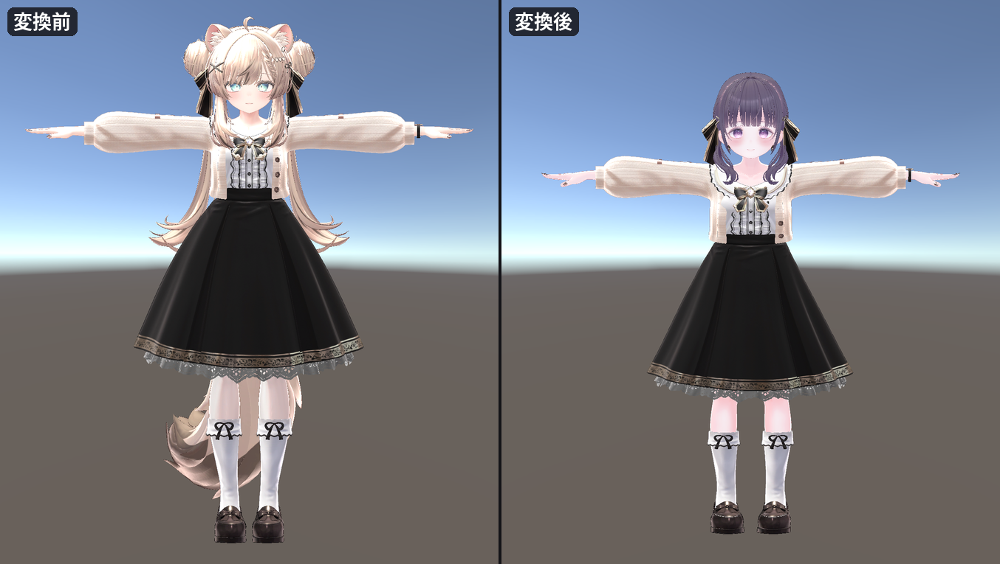
並べ方は、上と同じです。
くわしいやり方は、「はじめての練習」の章にあります。
気をつけること: どの衣装でもうまくいく、とは言えません。確かめたのは、アバターと衣装の 6 組だけです。
実アバターで確認済み
体に入ったところが、目で見て分かる。
どこが体に入っているのか、知りたい。変換のあと、［貫通を確認］を押します。シーンビュー（3D の景色を見るウィンドウ）に、十字の印が出ます。増えたところは、浅いと黄色、深いと赤です。元の衣装でも入っていたところは、灰青になります。
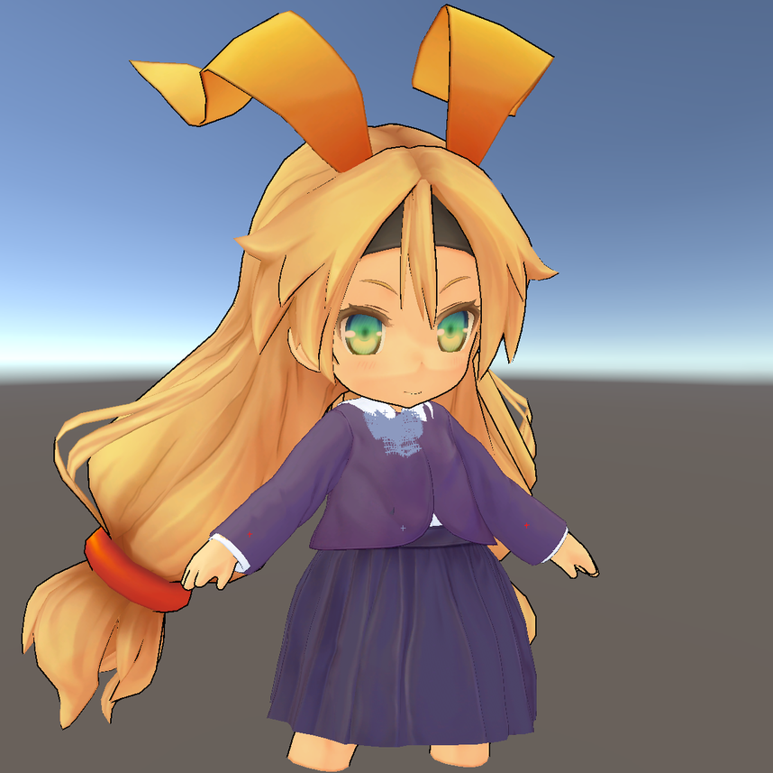
くわしいやり方は、「貫通の場所を確かめたい」の章にあります。
気をつけること: 体と服が一体（1 つのパーツになっている）のアバターがあります。その服の下の体は、おしはかって測ります。ずれることがあります。
実アバターで確認済み
ほかにできることは、「できること図鑑」にまとめました。
安心して試せます
元の衣装とアバターのデータは、そのまま残ります。いつでも元に戻せます。
変換では、元の衣装やアバターのファイルを書きかえません。
- すぐなら、Ctrl+Z で変換を取り消せます。
- あとからなら、［この変換を取り除く］を押します。変換した衣装と、アバターに足した物を、まとめて取り除きます。Unity を開き直したあとでも使えます。
- 元の服を隠したときも、［元の服を表示に戻す］で戻せます。
Ctrl+Z で戻せないことが、2 つあります。［いま片付ける...］で消したファイルは、戻りません。もう 1 つは、Prefab（パーツをまとめた Unity のファイル）に、部分ごとの設定（一部だけ変える設定）を直接つけるときです。先に確認の窓が出ます。［Prefab に追加する］を押すと、そのファイルが変わります。
必要なもの
- Unity 2022.3.22f1。確かめた環境は、「入れ方」の章にあります。
- 着せたいアバターと、ほかのアバター用の衣装。
- VRChat SDK（VRChat で使うもの）は、なくても使えます。
- Modular Avatar（衣装をつけるのに使うもの）も、なくても使えます。
BOOTH のページで買えます。
かかる時間
時間は、衣装とパソコンで変わります。試した 6 組では、およそ 30 秒から 4 分半でした。測ったのは、GPU のない Linux の Unity です。
先に知っておく言葉
- 貫通（衣装が体に入ったところ）。
- Prefab（パーツをまとめた Unity のファイル）。
ほかの言葉は、「言葉の一覧」にもあります。
3 つ選んで、変換するだけ
ほかのアバター用の衣装は、そのままでは着せることができません。着せかえ工房なら、3 つを選ぶだけで、自分のアバターに合うようにしてくれます。
選んで押すだけで、衣装が着られる。
ほかのアバター用の衣装を、自分のアバターに着せてみたい。選ぶのは、変換元アバター、変換先アバター、衣装の 3 つだけです。そのあと、［変換］を押します。骨の位置合わせは、しなくてかまいません。ほとんどの衣装は、はじめの設定のままで変換することができます。あとは、できあがるのを待つだけです。
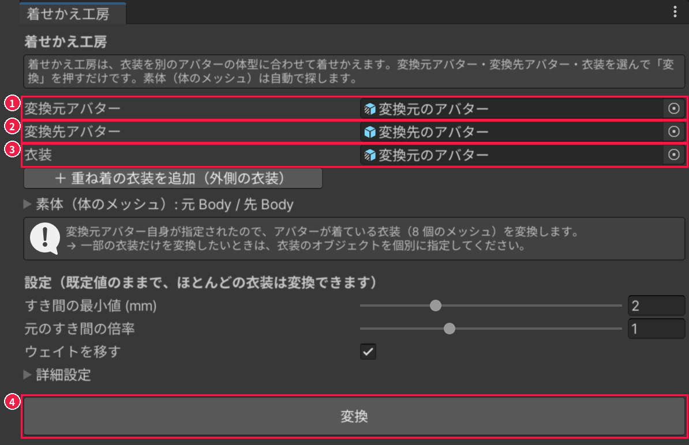
くわしいやり方は、「はじめての練習」の章にあります。
実アバターで確認済み
どれが体か、自動で見つけてくれる。
素体（アバターの体の部分）がどれなのか、分からない。素体は、自動で見つけてくれます。見つからないときは、手で選ぶこともできます。どうして選んだのかも、折りたたみの中で見ることができます。
くわしいやり方は、「画面の説明」の章にあります。
仕組みは動く
うまくいかないときも、直し方が分かる。
何がだめなのか分からないまま、失敗するのはこわい。骨の名前のつけ方が違っても、よくある名前なら、自動で合わせます。合わないときは、選んだらすぐ、直し方が案内に出ます。
くわしいやり方は、「はじめての練習」の章にあります。
仕組みは動く
着せていない衣装の Prefab も、使える。
まだ着せていない衣装の Prefab しか、持っていない。それでも、Prefab を［衣装］の欄に入れることができます。骨は、変換元アバターのものと、名前で合わせます。
くわしいやり方は、「衣装の Prefab を着せたい」の章にあります。
仕組みは動く
着ている服を、まとめて移せる。
アバターが着ている服を、まとめて移したい。［衣装］に変換元アバター自身を入れると、着ている服がまとめて変換されます。顔・髪・体は、はずされます。
くわしいやり方は、「はじめての練習」の章にあります。
気をつけること: 元の並び方は、そのままでは残りません。Animator（動きを決めるパーツ）などの設定ごと移したいときは、衣装の Prefab を 1 つずつ入れてください。
実アバターで確認済み
重ね着も、まとめて着せられる。
重ね着の衣装を、まとめて着せたい。欄を増やして、内側に着るものから、順に入れていきます。結果は、衣装ごとに、分かれて置かれます。
くわしいやり方は、「重ね着の衣装を着せたい」の章にあります。
仕組みは動く
腕の向きが違っても、そろえて変換する。
腕の向きが違うアバターでも、うまくいくのか心配になる。ポーズをそろえてから変換し、終わったら元のポーズに戻します。腕や脚の向きが大きく違うときは、そろえない場合とも比べて、形の崩れが少ないほうを使います。
［詳細設定］の［姿勢をそろえてから変換する］です。はじめから、オンです。くわしいやり方は、「画面の説明」の章にあります。
気をつけること: 腕や脚の向きが大きく違うと、時間がおよそ 2 倍かかります。
実アバターで確認済み
体型や頭身の違うアバターへ
体型がちがうと、ほかのアバター用の衣装は、合わないことが多いものです。着せかえ工房は、着せたいアバターの体に合うように、形を直してくれます。
体型が違っても、体に合わせて直せる。
体型がちがうアバターに着せると、ぶかぶかになったり、体に入り込んだりする。着せたいアバターの体に合うように、形を直します。体とのすき間（体と衣装の間のあき）は、めやすとして、たもちます。
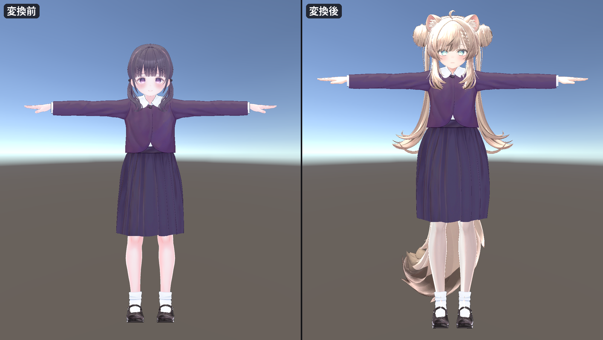
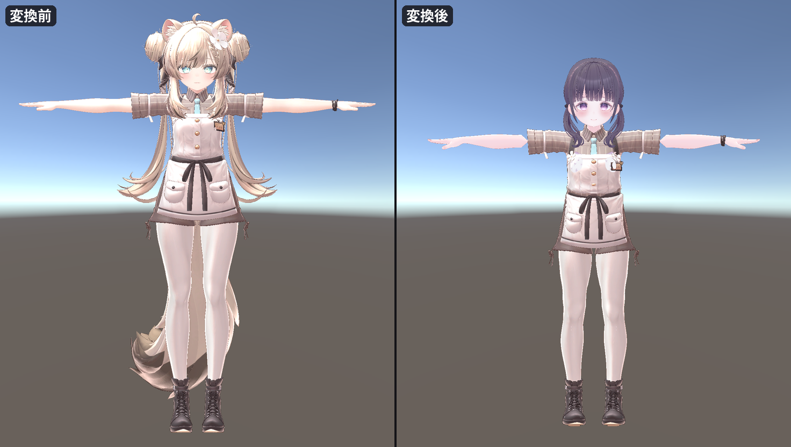
どちらも、左が変換前、右が変換後です。上と下は、べつの組です。
すき間は、自分で変えることもできます。設定の［すき間の最小値 (mm)］と［元のすき間の倍率］を使います。くわしいやり方は、「食い込みやぶかぶかを直したい」の章にあります。
気をつけること: どの衣装でもうまくいく、とは言えません。確かめたのは、アバターと衣装の 6 組だけです。
実アバターで確認済み
頭の大きなアバターにも、着せられる。
背が低くて、頭の大きいアバターにも、衣装を着せたい。着せたいアバターの体に合うように、大きさと形を直します。頭身がちがっても、合わせることができます。気になるところは、あとで直すこともできます。
左が変換前、右が変換後です。変換後の脚は、仮の肌（元の服を隠したところに出す、肌の色の面）で、おぎなっています。仮の肌は、試しの機能です。
くわしいやり方は、「はじめての練習」の章にあります。仮の肌は、「体と服が一体のアバターにも」の章にあります。
気をつけること: 体と服が一体のアバターは、服の下の体を、おしはかります。ほんとうの体とは、ちがうことがあります。
実アバターで確認済み
胸の上の骨（UpperChest）の違いは、自動で合わせてくれる。
アバターによって、胸の上の骨（UpperChest）が、あったり、なかったりする。片方にしかなくても、自動で足してくれます。こちらですることは、ありません。自分で、骨を足さなくてかまいません。
変換の前の案内に出ますが、直さなくてかまいません。
仕組みは動く
体を縮めるシェイプキーがあっても、合わせられる。
体を縮めるシェイプキー（形を変える設定）があると、うまく合わないのでは。縮めるキーは、0 として、合わせます。自分で、0 にしなくてかまいません。確かめるときも、同じ条件で数えます。
確かめるときの条件は、［結果の確認（貫通・ポーズ）］の中にあります。［体を縮めるシェイプキーを 0 として調べる］です。くわしいやり方は、「画面の説明」の章にあります。
気をつけること: 縮めるキーとみなすのは、名前に「Shrink」か「縮」が入ったキーです。「__Shrink__」のような区切りの下に並ぶキーも、同じです。
仕組みは動く
着せたあとを、自動で確かめる
着せたあと、体が服をつきぬけていないか、自分で見つけるのは、たいへんです。着せかえ工房が、数と場所を知らせてくれます。
変換が終わると、すぐ調べてくれる。
体が服をつきぬけていないか、心配になる。ボタンを押さなくても、変換が終わると、自動チェックがすぐに始まります。止まっているときと 8 つのポーズで、増えた貫通の数を知らせます。
まとめは、「結果」の欄に出ます。くわしいやり方は、「画面の説明」の章にあります。
実アバターで確認済み
増えた分と、元からあった分を、見分けられる。
元の衣装のせいか、変換のせいか、知りたい。［貫通を確認］を押すと、シーンビューに十字の印が出ます。もともと入っていたところは、灰青の十字になります。増えたところだけを見れば、それでかまいません。
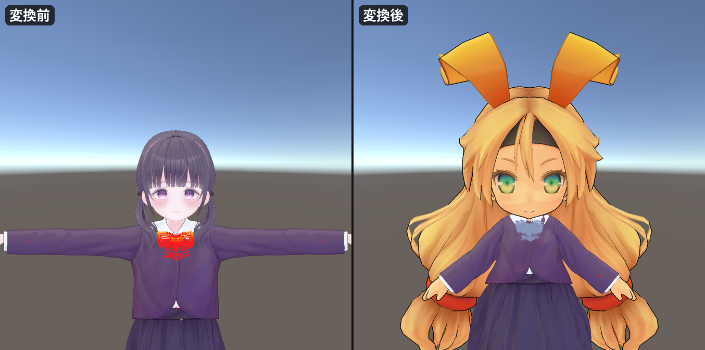
左が変換前、右が変換後です。灰青の十字は、もともと入っていたところです。左の十字は、この写真のために、かきました。元の衣装を、元のアバターで測ったものです。［貫通を確認］で調べるのは、変換後の衣装だけです。
［結果の確認（貫通・ポーズ）］の［貫通を確認］を使います。くわしいやり方は、「貫通の場所を確かめたい」の章にあります。
気をつけること: 元の衣装にもともとある穴やめり込みは、直しません。体と服が一体のアバターでは、服の下の体をおしはかって測ります。ほんとうの体とは、ちがうことがあります。
実アバターで確認済み
座ったときも、ポーズのコピーで確かめられる。
座ったり、しゃがんだりしたときも、心配になります。［ポーズで確認］を押すと、8 つのポーズで数えます。［表示］を押すと、ポーズをとったコピーが横に出て、元のアバターは動きません。コピーは、8 つのポーズすべてで見ることができます。
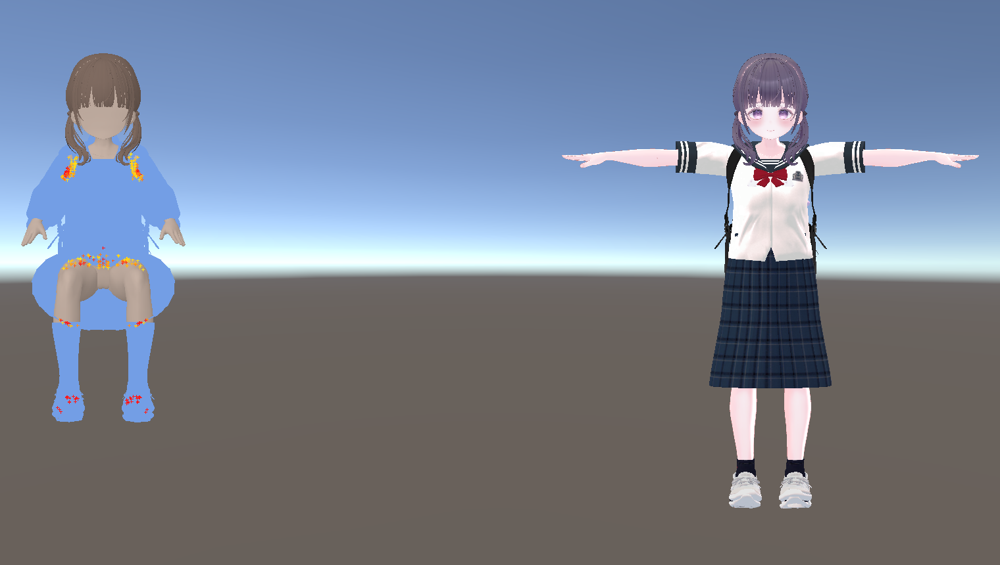
座りのポーズのコピーです。
［結果の確認（貫通・ポーズ）］の［ポーズで確認］と［表示］を使います。くわしいやり方は、「貫通の場所を確かめたい」の章にあります。
気をつけること: 腕と胴のように、体どうしが重なるポーズの貫通は、直せません。8 つのポーズ以外は、試していません。
実アバターで確認済み
試した 6 組では、止まった姿で増えた貫通はなかった。
でき上がりが、気になる。試した 6 組は、実アバターと市販の衣装です。止まった姿で増えた貫通は、どれも 0 でした。8 ポーズの貫通は、5 組で元の衣装より少なく、残りの 1 組も、ほぼ同じでした。
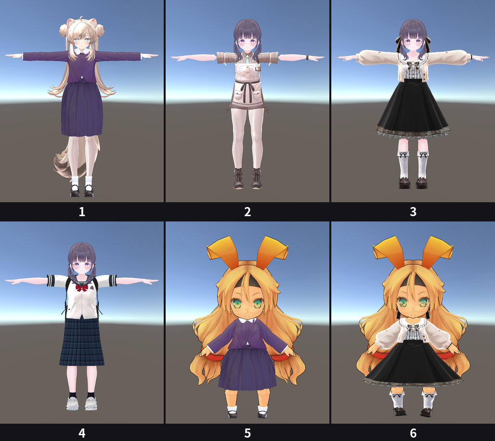
数えたのは、体の中に 1 mm より深く入った頂点（形を作る点）です。もともと入っていたところは、数えていません。体と服が一体の 2 組は、おしはかった体で測りました。元の衣装は、元のアバターに着せて比べました。
気をつけること: 試したのは、この 6 組だけです。この 8 つのポーズは、変換が形を合わせるときにも使います。画面の自動チェックとは数え方がちがうので、数は同じになりません。
実アバターで確認済み
Unity を開き直しても、確かめられる。
確認は、シーン（アバターなどがある 3D の場所）を読み直します。開き直したあとや、手で直したあとでも、できます。
動いたときの服
腕や脚を動かすと、服の形は、止まっているときよりくずれやすいものです。着せかえ工房は、動いたときのことも考えて、形を整えます。
動いても、衣装が体に入りにくい。
腕や脚を動かすと、体に入ったり、のびたりする。着せたいアバターの体と同じように、衣装が動くようにします。ウェイト（衣装が、骨の動きにどれだけついていくかの割合）を、体から写すからです。さけたようにのびるところは、元の衣装の動き方に近づけます。
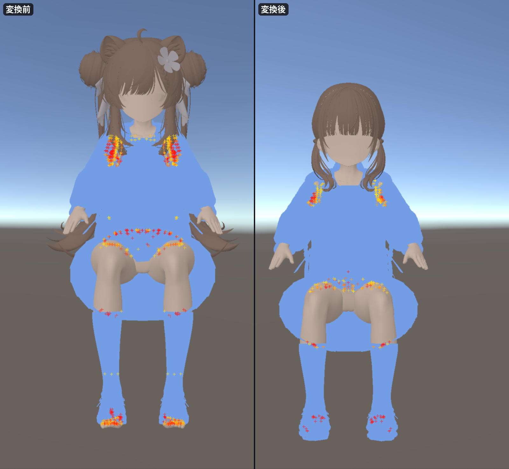
左が変換前、右が変換後です。どちらも、座ったポーズです。十字の印は、体に入ったところです。右のほうが、ずっと少ないです。
設定の［ウェイトを移す］を使います。はじめから、オンです。くわしいやり方は、「画面の説明」の章にあります。
気をつけること: 腕と胴のように、体どうしが重なるポーズの貫通は、直せません。
実アバターで確認済み
いろいろなポーズを試して、入りにくい動き方を選ぶ。
スカートの前が、脚を上げると体に入る。腕や脚を動かして、いろいろなポーズを試します。そして、スカートが体に入りにくいウェイトの候補を選びます。立った姿の形は、変えません。
［詳細設定］の［ポーズを考えてウェイトを調整する］を使います。はじめから、オンです。くわしいやり方は、「画面の説明」の章にあります。
気をつけること: 選ぶのに使うのは、動く範囲に散らした、決まった 8 つのポーズです。［ポーズで確認］の 8 つとは、別のポーズです。確かめたのは、［ポーズで確認］の 8 つのポーズまでです。ほかの動きは、目で確かめてください。
実アバターで確認済み
頭の飾りが、ずれにくい。
頭の飾りが、ずれたり、ゆがんだりする。頭だけに付くパーツは、頭と髪の面、目の高さに合わせて置きます。飾りの形は、保ったまま動かします。
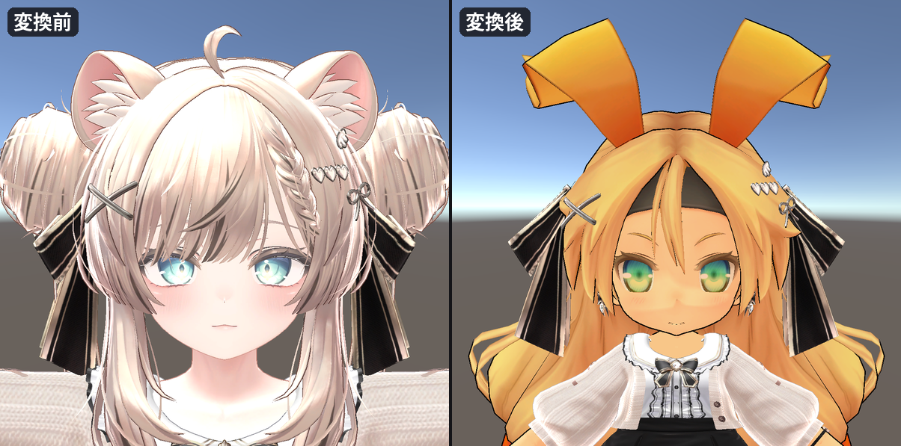
左が変換前、右が変換後です。飾りは、髪の上で、目より高いところにあります。
設定は、いりません。変換のときに、自動で置かれます。
気をつけること: 形を保つので、頭のまるみが大きく違うと、はしが少し浮くことがあります。頭の大きなアバターでは、耳飾りが大きくなり、腕を上げると肩に入ることがあります。
実アバターで確認済み
体と服が一体のアバターにも
体と服が一体のアバターにも、着せられます。変換のあとで、元の服をどうするかも、選ぶことができます。
体と服が一体でも、着せられる。
体と服が一体のアバターには、着せられないと思っていた。こちらで調べなくても、自動で見分けます。服の下の体を、おしはかって、合わせます。
［詳細設定］の［体と服が一体のアバター］で、選べます。はじめは、自動です。
気をつけること: おしはかった体は、ほんとうの体と、ちがうことがあります。細くおしはかると、貫通の数は、少なめに出ます。数だけでなく、シーンビューで、目でも確かめてください。服のない体が、別にあるときは、それを素体の欄に入れます。そして「推定しない」を選ぶこともできます。
実アバターで確認済み
元の服を隠して、脚や腕も、おぎなえる。
元の服が、衣装と重なって見える。ボタンを押すと、元の服だけが、見えなくなります。隠して消えた脚や腕は、おぎなえます。
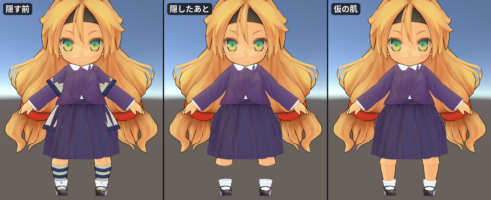
左から、隠す前、隠したあと、仮の肌です。
押したあとも、Undo（Ctrl+Z で戻す操作）で、元に戻すことができます。元の服そのものは、こわしません。
隠すだけのときは、［詳細設定］の［変換先の元の服を隠す（Undoで戻す）］を押します。仮の肌（元の服を隠したところに出す、肌の色の面）も出すときは、［元の服を隠して仮の肌を表示（試験的・Undoで戻す）］を押します。どちらも、変換のあとに、押すことができます。隠した服は、［元の服を表示に戻す］でも戻せます。このボタンは、隠したときだけ出ます。くわしいやり方は、「体と服が一体のアバターに着せたい」の章にあります。
気をつけること: 仮の肌は、試しの機能です。顔・指・足先は、おぎなえません。もようや質感は、戻りません。見た目を見るだけに使います。貫通を調べるときには、使いません。
実アバターで確認済み
一部だけ、設定を変える
衣装の一部だけ、変換のしかたを変えたいことがあります。そんなときは、その部分だけに、べつの設定をつけられます。
部分は、いろいろなやり方で選べる。
どうやって、一部だけを選ぶのか、分からない。選び方は、3 つあります。マテリアル（色や質感を決める設定）ごとに、選べます。マスク画像（白と黒で、選ぶところを示した絵）でも、選べます。ブラシ（なぞって塗るもの）は、シーンビューで使います。
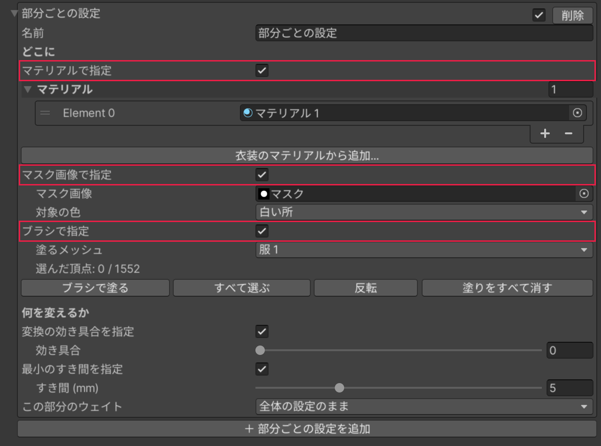
［部分ごとの設定（マテリアル・マスク画像・ブラシ）］を開きます。衣装の行の［部分ごとの設定を追加］を押します。インスペクター（ものの設定が出るウィンドウ）に、設定が出ます。その「どこに」で、［マテリアルで指定］［マスク画像で指定］［ブラシで指定］から選びます。くわしいやり方は、「一部だけ、形を変えたくない」の章にあります。
気をつけること: ブラシで塗るときの、マウスの感じは、まだ確かめていません。塗る・消す・Ctrl+Z で戻す仕組みは、確かめました。
仕組みは動く
一部だけ、すき間を大きくできる。
一部だけ、体に食い込んでしまう。たとえば、ひざや胸の先です。その部分だけ、すき間を大きくできます。選んだ部分だけに、効きます。ほかのところは、いつもどおりです。
部分の設定の「何を変えるか」で、すき間の項目をオンにします。そして、［すき間 (mm)］を変えます。くわしいやり方は、「一部だけ、形を変えたくない」の章にあります。
仕組みは動く
変換し直しても、設定はそのまま。
変換し直すたびに、設定を作り直すのは、めんどうです。部分ごとの設定は、衣装に残ります。だから、変換し直しても、そのまま使われるのです。
くわしいやり方は、「取り消したい・変換し直したい」の章にあります。
気をつけること: ［衣装］の欄に Prefab のファイルを入れたときは、設定をつける前に、確認の窓が出ます。［Prefab に追加する］を押すと、その Prefab のファイルが変わります。Ctrl+Z では、戻せません。ファイルを変えたくないときは、［キャンセル］を押します。
仕組みは動く
仕掛けや揺れ物も、引き継ぐ
動くかざりや、ゆれるものが付いた衣装も、あります。どちらも、変換のあとの衣装に、うつします。ゆれるものは、VRChat SDK があるときだけです。
動くかざりの仕掛けも、引き継ぐ。
アニメーションで動くかざりが、変換でこわれるのでは。アニメーションが指す先を、新しい衣装に合わせて直します。たとえば、時計のはりのアニメーションです。変換のあとも、同じ部品を指します。
左が変換前、右が変換後です。
設定は、いりません。変換のときに、自動で直ります。はじめから、使えます。
気をつけること: はりが回るのを見たのは、確かめ用の簡単な形だけです。実アバターの衣装では、指す先が見つかることまで確かめました。変換のあと、Unity で再生して確かめます。
実アバターで確認済み
ゆれ物の設定を、付け直してくれる。
PhysBone（髪や服をゆらす部品）の設定を、付け直したくない。VRChat SDK があれば、同じ骨に付け直します。骨がのび縮みした分は、半径も直します。
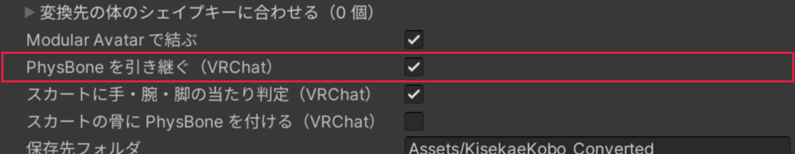
［詳細設定］の［PhysBone を引き継ぐ（VRChat）］を使います。はじめから、オンです。VRChat SDK が無いと、この項目は出ません。
気をつけること: VRChat の中でのゆれ方は、確かめていません。確かめたのは、設定した値と、置いた位置までです。確かめた VRChat SDK は、3.10.5 だけです。ほかの版は、確かめていません。
実アバターで確認済み
スカートに、ぶつかるところを足せる。
VRChat の中で、スカートに手や脚がめり込む。スカートの PhysBone に、コライダー（ぶつかるところを決める部品）を足します。足すのは、手・前腕・太ももの分です。
［詳細設定］の［スカートに手・腕・脚の当たり判定（VRChat）］を使います。はじめから、オンです。
気をつけること: スカートが押し出される見た目は、確かめていません。下ろした手が入るのは、ウェイトの調整では、直りません。足すと、アバター全体の数が増えることがあります。パフォーマンスランク（アバターの重さの目安）は、保証できません。
仕組みは動く
VRChat SDK が無くても、使える。
VRChat SDK や Modular Avatar が無くても、使いたい。どちらも無くても、変換と確認は、すべて使えます。そのままで、だいじょうぶです。Modular Avatar があると、衣装の骨を残して、結びます。VRChat SDK があると、PhysBone などの項目が出ます。
［詳細設定］の［Modular Avatar で結ぶ］を使います。Modular Avatar がなければ、灰色になります。そのときは、変換先の骨に直接つなぎます。くわしいやり方は、「Modular Avatar や PhysBone と使いたい」の章にあります。
気をつけること: 確かめた Modular Avatar は、1.18.7 だけです。ほかの版は、確かめていません。
実アバターで確認済み
Unity の布の設定も、引き継ぐ。
Cloth（Unity で布をゆらす部品）の設定も、うつします。設定は、いりません。
安心して試せる
元の衣装とアバターのデータは、そのまま残ります。いつでも元に戻せます。
変換の結果は、新しく作る、べつのものです。元の衣装やアバターのファイルは、書きかえません。
- すぐなら、Ctrl+Z で変換を取り消せます。
- あとからでも、［この変換を取り除く］で戻せます。変換した衣装と、変換でアバターに足した物を、まとめて取り除きます。
- 元の服を隠したときも、［元の服を表示に戻す］で戻せます。
気をつけること: ［衣装］の欄に Prefab のファイルを入れて、部分ごとの設定をつけるときは、先に確認の窓が出ます。［Prefab に追加する］を押すと、その Prefab のファイルが変わります。Ctrl+Z では、戻せません。
元のものは、変えない。
大事な衣装やアバターを、こわしたくない。できあがった衣装は、新しく作られて、アバターの中に置かれます。元のものは、そのままです。
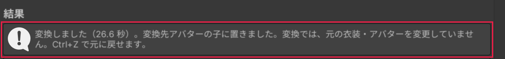
できあがると、「結果」の欄に、そう書いてあります。
実アバターで確認済み
失敗しても、Ctrl+Z で戻せる。
失敗したら、元に戻したい。変換のすぐあとなら、Ctrl+Z を 1 回押します。それで、まとめて取り消されます。作った骨も、いっしょに消えます。気にせず、なんどでも試せます。
あとから戻すときは、変換した衣装を選びます。インスペクター（ものの設定が出るウィンドウ）の［この変換を取り除く］を押します。Unity を開き直したあとでも使えます。取り除いたあとも、Ctrl+Z で取り消せます。
実アバターで確認済み
前のものを、残しておける。
何度も変換し直すと、できあがりが増えて、散らかる。同じ衣装を、同じアバターに変換し直すと、前のものと入れかわります。残したいものには、印を付けられます。
できた衣装を選ぶと、インスペクターに、変換の記録（変換した衣装に付く、印のパーツ）が出ます。名前は「Converted Outfit Record (Script)」です。そこで、［変換し直しても残す］をオンにします。
仕組みは動く
いらないファイルは、自動で片付く。
使わなくなったファイルが、たまっていく。使われなくなったファイルは、自動で片付きます。いま片付けることも、できます。
一番下の［変換で作ったファイルの片付け］で、［いま片付ける...］を押します。消す前に、数を見せてくれます。
気をつけること: ［削除する］で消したファイルは、戻りません。［Undo の履歴も消して片付ける］を選ぶと、Undo の履歴も、すべて消えます。Unity を開いてから作ったものは、次に開くまで、残ります。
仕組みは動く
失敗しても、途中のものは残らない。
うまくいかなかったとき、途中のものが残るのでは。途中でだめになったら、置いたものも取り消して、シーンには何も残しません。もう一度、変換できます。
「変換中にエラーが起きました」と出ます。
仕組みは動く
ほかの小さな便利
- アバターをどこに置いても、どちらを向いても、衣装は同じ位置です。
- 服をまとめて移すとき、顔と髪は、入れません。
- シェイプキーは、名前も形も、いまの値も、そのまま残ります。
- ［詳細設定］の［保存先フォルダ］で、保存先を変えられます。
- ［詳細設定］の［設定を既定値に戻す］で、設定をはじめの値に戻せます（保存先フォルダは、そのままです）。
苦手なこと
着せかえ工房にも、苦手なことがあります。買う前に、ここで確かめてください。
変換のしあがり
- 元の衣装の、あなや食い込みは、直せません。灰青の十字で見分け、ほかのソフトで直します。
- 体と服が一体のアバターの服だけを、ほかへ移せません。ほかの衣装を着せることは、できます。
- 色や模様は、変えません。マテリアルの設定で直します。
- 新しい衣装は、作れません。もっている衣装を、ほかの体型に合わせるものです。
- 貫通が、すべて消えるわけではありません。試した例では、そでぐちやくつに、少し残りました。［すき間の最小値 (mm)］を大きくするか、部分ごとの設定で直します。
- 腕と胴のように、体どうしが重なるポーズの貫通は、直せません。［ポーズで確認］で見つけて、そのポーズをさけます。
- 体と服が一体のアバターの、服の下の体は、おしはかったものです。貫通の数は、少なめに出ることがあります。目でも確かめます。
- 仮の肌は、試しの機能です。顔・指・足先は、おぎなえません。見た目の確認だけに使います。
- どの衣装でもうまくいく、とは言えません。確かめたのは、アバターと衣装の 6 組だけです。変換後に、自動チェックと目で確かめます。
- 8 つのポーズのチェックは、決まった 8 つだけを見ます。ほかのポーズは、目で確かめます。腕や脚の向きをそろえるかは、すべての衣装で同じです。1 着ずつ変換して、くらべます。
- 頭の飾りは、形をたもったまま動かします。頭のまるみが大きく違うと、はしが少し浮きます。Unity で、位置を直します。
- 頭の大きなアバターでは、みみかざりが大きくなります。腕を上げると、かたに入ることがあります。そのポーズをさけるか、Unity で飾りの大きさや位置を直します。
VRChat の中
- VRChat の中でのゆれ方や、おし出される見た目は、確かめていません。アップロード前に、VRChat SDK で確かめます。
- 下ろした手がスカートに入るのは、ウェイトでは直りません。VRChat SDK があれば、ぶつかるところを足す項目を、オンにします。足すと数が増え、パフォーマンスランクは保証できません。
- 動くかざりの仕掛けは、変換のあと、Unity で再生して確かめます。
使えないもの
- Humanoid（人型の骨の設定）がないアバターは、変換できません。モデルの［Rig］タブで、Humanoid にします。
- 1 つの頂点（形を作る点）が、5 本以上の骨で動く衣装は、変換できません。3D のソフトで、4 本以下にします。
- 骨で動かない衣装は、変換できません。骨の付いた衣装を使います。
- ファイルのままのアバターは、変換元にも変換先にもできません。ヒエラルキー（Unity の左にある、シーンにあるものの一覧）に置いて、入れます。
時間・場所・配るとき
- 変換中は、Unity を使えません。スカートつきの重い衣装は、およそ 4 分半かかりました（GPU のない Linux の Unity）。腕や脚の向きが大きく違うと、およそ 2 倍かかります。
- 動作を確かめた環境は、「入れ方」の「動作を確かめた環境」にまとめました。
- VRChat へのアップロードと、VCC（VRChat 用のアプリ）での入れ方は、確かめていません。ブラシで塗るときの、マウスの感じも、確かめていません。
- 変換した衣装は、元のデータから作ります。たいていの規約は、手を加えたデータを配ることを、みとめていません。自分で使い、配るまえに、規約を確かめます。
悩みから探す
こまっていることから、できること図鑑を探せます。近いものが見つかったら、その行を押してください。そのカードに進みます。見出しを押すと、その章に進みます。
着せるまでを、かんたんに
- ほかのアバター用の衣装を、自分のアバターに着せたいとき。
- どれが体なのか、わからないとき。
- 失敗する前に、直し方を知りたいとき。
- まだ着せていない衣装の Prefab で、変換したいとき。
- 着ている服を、まとめて移したいとき。
- 重ね着の衣装を、まとめて着せたいとき。
- 腕の向きがちがうアバターでも、着せたいとき。
体型や頭身がちがうとき
- 体型がちがって、ぶかぶかになったり、食い込んだりするとき。
- 頭の大きなアバターにも、着せたいとき。
- 胸の上の骨（UpperChest）が、片方のアバターにしかないとき。
- 体を縮めるシェイプキーが、あるとき。
着せたあとを、確かめたい
- 体が服をつきぬけていないか、調べたいとき。
- つきぬけている場所を、知りたいとき。
- 元の衣装のせいか、変換のせいかを、知りたいとき。
- 座ったときの貫通を、確かめたいとき。
- 変換のできばえを、知りたいとき。
- Unity を開き直したあとも、確かめたいとき。
動いたとき
体と服が一体のアバター
一部だけ変えたい
仕掛けやゆれ物
- 動くかざりの仕掛けを、残したいとき。
- PhysBone の設定を、付け直したくないとき。
- スカートに手や脚が、めり込むとき。
- Modular Avatar と使いたいとき。
- VRChat SDK が無くても、使いたいとき。
- Unity の布（Cloth）の設定を、残したいとき。
安心して試したい
苦手なこと
- できないことを、先に知りたいとき。
Unity の基本の操作
Unity をはじめて使う人のための章です。この手引書で使う操作だけを書きます。知っている人は、「入れ方」へ進んでください。
プロジェクトを開く
プロジェクト（Unity で作業するフォルダ）は、Unity Hub から開きます。Unity Hub は、Unity を起動するアプリです。左の「Projects」に、プロジェクトが並びます。名前を押すと、そのプロジェクトで Unity が開きます。アバターを入れてあるプロジェクトを使います。
新しく作るときは、Unity Hub の「New project」を押します。版は 2022.3.22f1 を選びます。ひな形は、「3D」のものを選びます。
画面の場所
はじめの並び方では、次の場所にあります。
- メニューバー: 画面のいちばん上の行です。［File］［Edit］［Assets］などが並びます。着せかえ工房を入れると、［Tools］が増えます。
- ヒエラルキー（Hierarchy）: 左です。シーンにあるものの一覧です。
- シーンビュー（Scene）: まん中です。上のタブに「Scene」と出ています。
- インスペクター（Inspector）: 右です。選んだものの設定が出ます。
- Project ウィンドウ（Project）: 下です。ファイルが並びます。
- Console（知らせが出るウィンドウ）: 下の、Project のとなりのタブです。
ウィンドウを閉じてしまっても、だいじょうぶです。メニューの［Window > General］から出せます。たとえば、［Window > General > Console］です。シーンビューなら、［Window > General > Scene］です。
マウスとキーの操作
- ドラッグ: 左ボタンを押したまま動かします。行き先で離します。
- スクロール: ウィンドウに入りきらないときに使います。ホイールを回すと、上下に動きます。右の細い棒でも、動きます。
- 寄る: ヒエラルキーで、行をダブルクリックします。シーンビューが、そのものに寄ります。
- 向きを変える: シーンビューで、右ボタンを押したままマウスを動かします。
- 近づく: シーンビューで、ホイールを回します。
取り消す
Ctrl+Z を押すと、さいごの操作から 1 つずつ取り消します。Ctrl+Y を押すと、取り消した操作が戻ります。着せかえ工房のウィンドウを押したあとでも、効きます。メニューの［Edit］のいちばん上からも、選べます。
入れ方
着せかえ工房を Unity に入れます。手に入れる、Unity に入れる、入ったことを確かめる、の順です。Unity がはじめての人は、先に「Unity の基本の操作」を読みます。
手に入れる
BOOTH のページで買います。ZIP のファイルをダウンロードします。いまの版は {{VERSION}} です。
ZIP を解凍します。中に unitypackage（Unity に入れるファイル）があります。名前は KisekaeKobo.unitypackage です。
Unity に入れる
先に、使うプロジェクトを Unity で開きます。開き方は、「Unity の基本の操作」にあります。
-
unitypackage をダブルクリックします。取り込むファイルの一覧が、窓で出ます。窓の上には、「KisekaeKobo」と出ます。
-
窓の右下の［Import］を押します。一覧のチェックは、付けたままにします。
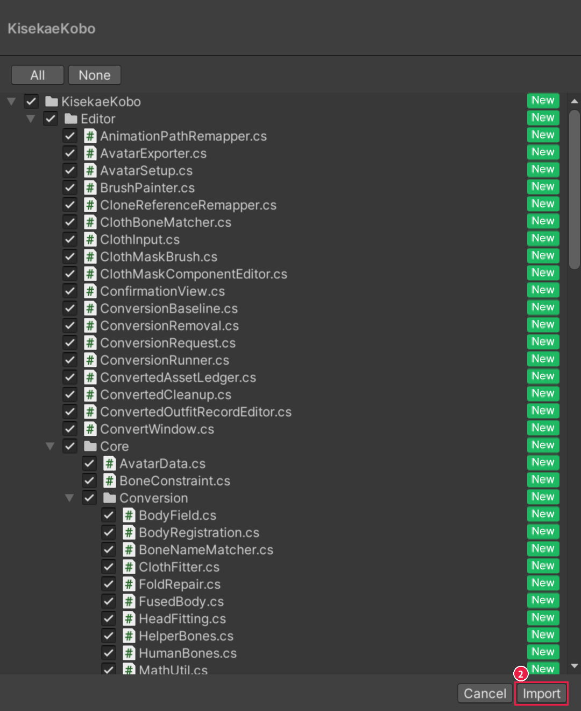
-
読み込みが終わるまで、待ちます。進み具合の窓や、右下の回る印が消えるまで、待ちます。
窓が出ないときは、別のやり方があります。メニューの［Assets > Import Package > Custom Package...］を選びます。そのあと、unitypackage を選びます。
入ったことを確かめる
-
Project ウィンドウの左の一覧で、「Assets」を押します。右に「KisekaeKobo」のフォルダが出ます。
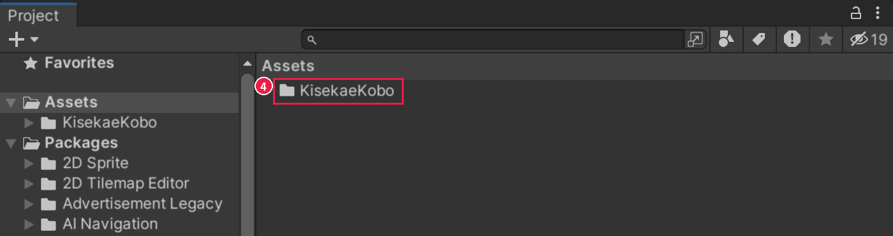
-
メニューバーの［Tools > 着せかえ工房］を選びます。
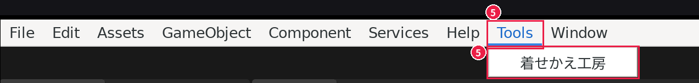
-
出たウィンドウの上に、「着せかえ工房」と出ているか確かめます。
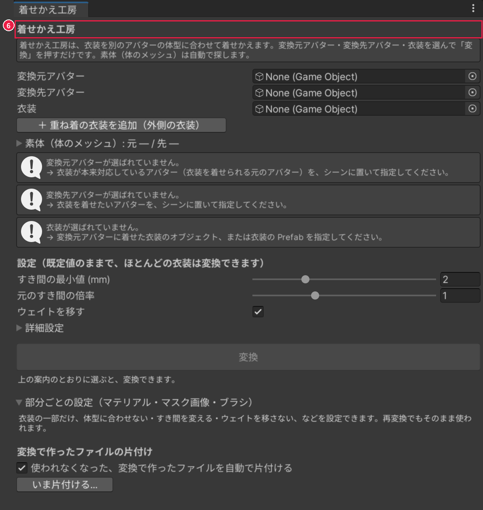
メニューバーは、画面のいちばん上の行です。［Tools］は、着せかえ工房を入れると増えます。ウィンドウが出れば、入っています。これで、入れ終わりです。はじめは、白いふきだしの案内が 3 つ出ます。まだ何も選んでいないためで、エラーではありません。［Tools］が出ないときは、「困ったとき」を見てください。
動作を確かめた環境
着せかえ工房は、次の環境で確かめました。
- Unity 2022.3.22f1（Linux のパソコン）。
- VRChat SDK 3.10.5。Modular Avatar 1.18.7。
Windows と Mac では、まだ確かめていません。確かめたら、ここに書き足します。VCC（VRChat 用のアプリ）は、いりません。VCC で作ったプロジェクトへの入れ方は、まだ確かめていません。
自分の Unity の版は、2 か所で分かります。Unity Hub の、プロジェクトの一覧です。Unity の画面のいちばん上の、題名の行にも出ます。
なくても使えるもの
VRChat SDK と Modular Avatar は、なくても使えます。あると、使える項目が増えます。「Modular Avatar や PhysBone と使いたい」の章を見ます。
新しい版のときは、「新しい版に入れ替える」を見ます。
新しい版に入れ替える
新しい版を入れるときは、古いフォルダを先に消します。消さないと、いらなくなったファイルが残ることがあります。はじめて入れる人は、この章はいりません。
古いフォルダを消す
-
Project ウィンドウの左の一覧で、「KisekaeKobo」を選びます。
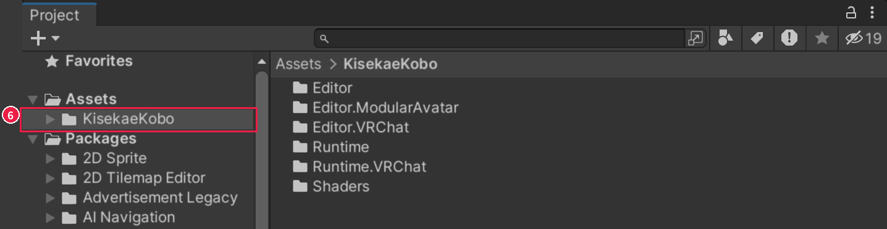
-
キーボードの Delete キーを押します。
-
確認の窓が出たら、［Delete］を押します。
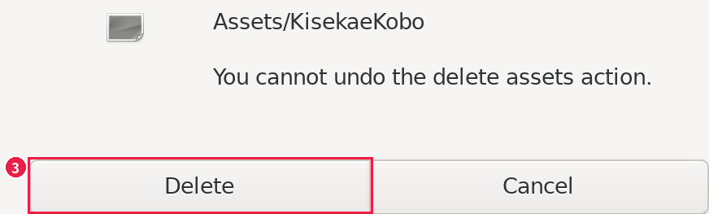
新しい版を入れる
新しい版は、「入れ方」の手順 1 から 6 と同じに入れます。入れ直したあと、赤い「CS2001」が出ることがあります。そのときは、Unity を開き直します。くわしくは、「困ったとき」にあります。
変換の結果は残ります
変換の結果は、別のフォルダに入ります。名前は「KisekaeKobo_Converted」です。このフォルダは、消さないでください。入れ替えても、前の変換の結果は消えません。
はじめての練習
変換元のアバターが着ている衣装を、変換先のアバターに着せます。変換しても、元のアバターと衣装は書き換わりません。選ぶのは、［変換元アバター］、［変換先アバター］、［衣装］の 3 つです。［衣装］には、変換元のアバターそのものを入れます。すると、着ている服をまとめて変換します。
使うアバター
まず、アバターを 2 体用意します。どちらも、Humanoid（人型の骨の設定）のアバターを使います。変換元には、体と服が別のパーツになっているアバターを選びます。Humanoid でないときは、ウィンドウに案内が出ます。分からなければ、そのまま進めてかまいません。
アバターの Prefab は、Project ウィンドウにあります。青い箱の印が付いた、アバターの名前のファイルです。操作は、「Unity の基本の操作」にあります。
変換する
ウィンドウが画面に入りきらないときは、ホイールで上下に動かせます。
-
2 体の Prefab を、1 体ずつヒエラルキーへドラッグします。2 体は、重なって見えることがあります。
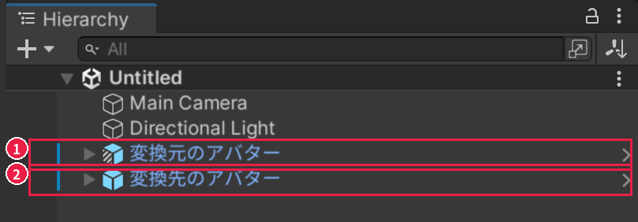
-
メニューバーの［Tools > 着せかえ工房］を選びます。ウィンドウが出ます。白いふきだしの案内が 3 つ出て、［変換］ボタンは灰色です。まだ何も入っていないためです。
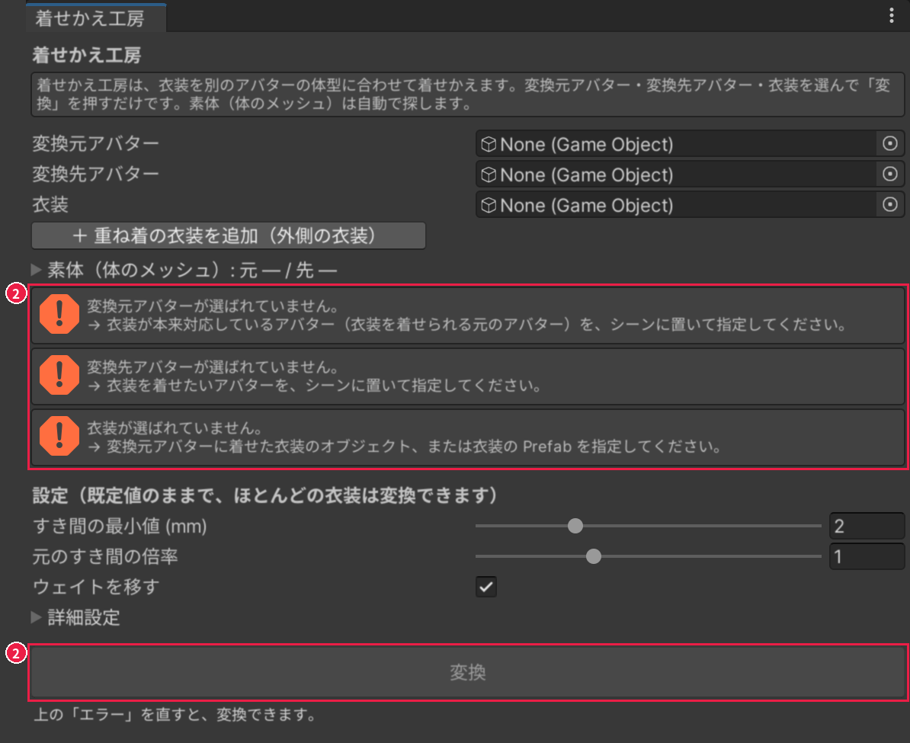
-
ヒエラルキーから、変換元のアバターを［変換元アバター］の欄へドラッグします。
-
変換先のアバターを、［変換先アバター］の欄へドラッグします。
-
もう一度、変換元のアバターを、［衣装］の欄へドラッグします。3 つの案内が消えて、［変換］ボタンが使えます。ほかのお知らせは、そのままでかまいません。
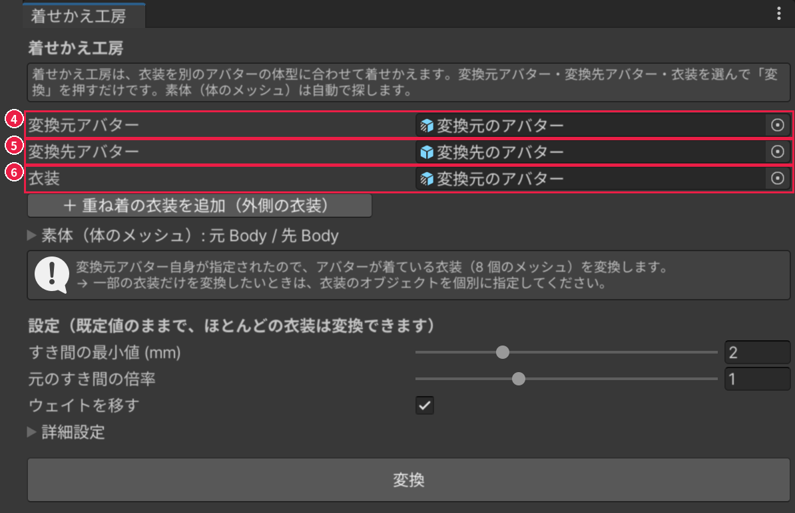
-
設定はそのままで、［変換］ボタンを押します。進み具合の窓が、2 回続けて出ます。変換と、自動チェックです。消えるまで、Unity は動かせません。試した 6 組では、およそ 30 秒から 4 分半でした。
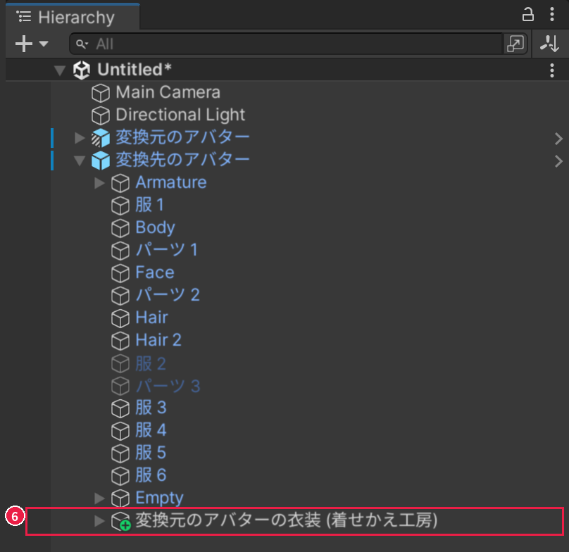
-
「結果」の欄に、「変換しました」と出たか確かめます。「結果」の欄は、ウィンドウの下の方にあります。これで、変換できています。
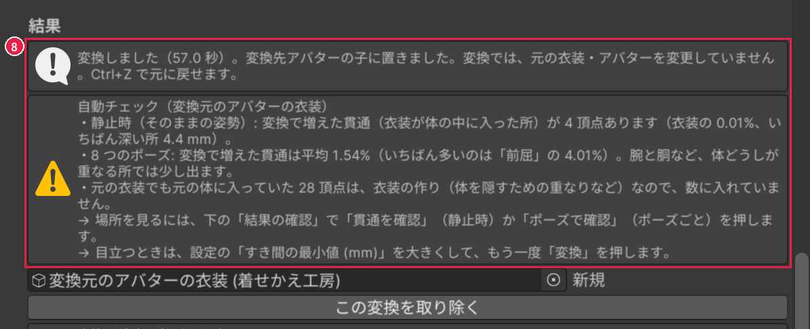
-
ヒエラルキーで、変換先のアバターが、もとから着ている服の行を選びます。Ctrl キーを使うと、まとめて選べます。名前に「 (着せかえ工房)」が付いた行と、体の行は、ふくめません。
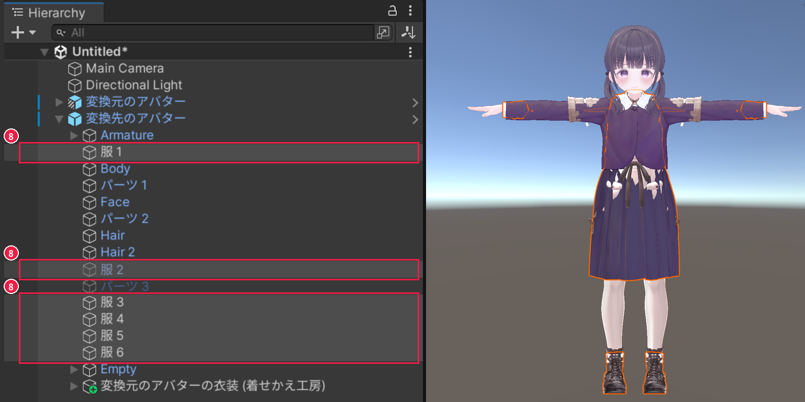
-
インスペクターで、名前の左のチェックを外します。もとの服が見えなくなります。
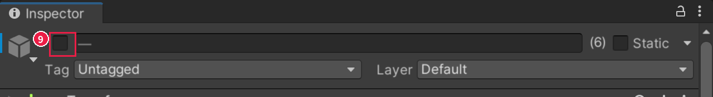
-
ヒエラルキーで、できた衣装の行をダブルクリックします。シーンビューが、衣装に寄ります。変換先のアバターが、変換元の衣装を着ていれば、できあがりです。
写真の左が変換前、右が変換後です。変換先のもとの服は、手順 8 と 9 で隠しています。
手順 6 の画像の灰色の行は、はじめから隠れているパーツです。服の行は、シーンビューで見分けます。選択中のパーツは、シーンビューで、橙色のふちで囲まれます。
続きは、「練習の結果を見る・取り消す」にあります。自動チェックの読み方と、取り消し方です。
練習の結果を見る・取り消す
「はじめての練習」のあとに読む章です。自動チェックの読み方と、取り消し方です。
自動チェックの読み方
自動チェックは、「結果」の欄に出ます。変換で増えた貫通を数えます。印のちがいで、次のように読みます。
- 白いふきだしで「ありません」と出た: 止まった姿では、増えたところはありません。そのまま進めます。
- 黄色い三角で「○ 頂点あります」と出た: シーンビューで、そこを見ます。肌が衣装の外に出ていなければ、そのままでかまいません。
- 肌が出て目立つとき: ［すき間の最小値 (mm)］を大きくして、もう一度［変換］を押します。
- 「8 つのポーズ」の平均: 腕と胴など、体どうしが重なるところでは、少し出ます。
練習の画像では、黄色い三角で「4 頂点あります」と出ました。衣装の 0.01% です。このくらいのときは、まず見た目で確かめます。
場所の見方は、「貫通の場所を確かめたい」にあります。すき間の変え方は、「食い込みやぶかぶかを直したい」にあります。
取り消すとき
Ctrl+Z は、さいごの操作から 1 つずつ取り消します。変換のすぐあとなら、1 回で、まとめて取り消されます。そのあとで服を選んだり、隠したりしたときは、そちらから順に戻ります。できた衣装が消えるまで、押します。2 体は、そのままです。
Ctrl+Y を押すと、取り消したものが戻ります。「結果」の欄は、戻りません。
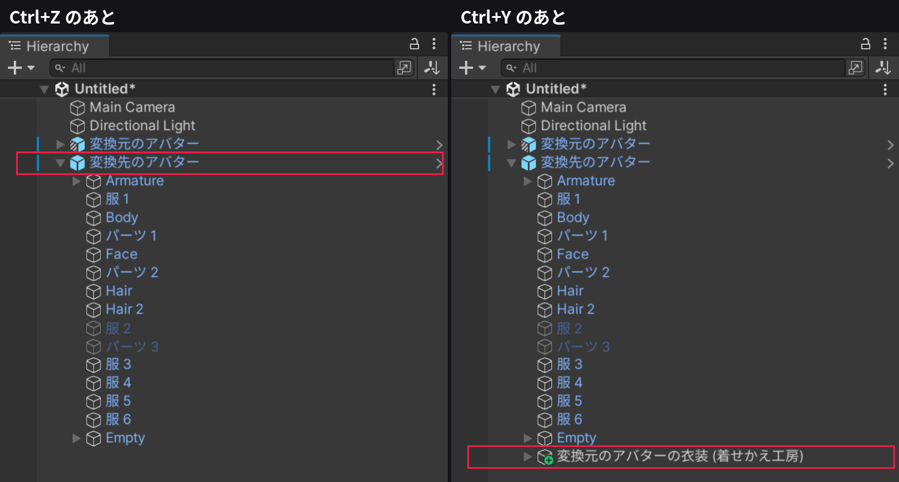
左は Ctrl+Z のあとです。枠の行の下から、できた衣装が消えています。右は Ctrl+Y のあとで、衣装の行が戻っています。隠した服は、チェックを入れ直すと見えます。
［この変換を取り除く］を使うときは、「取り消したい・変換し直したい」にあります。
うまくいかないとき
- ［変換］ボタンが灰色のまま。ウィンドウの案内を読みます。「→」のあとに、直し方が書いてあります。
- Prefab のままだと出た。アバターが、Project ウィンドウのままです。ヒエラルキーに置いたほうを、入れ直します。
- 「SkinnedMeshRenderer がありません」と出た。変換元の服に、SkinnedMeshRenderer（体や服の形を表示するパーツ）がありません。ほかのアバターを使います。
- Humanoid でないと出た。くわしいやり方は、「困ったとき」の章にあります。
気をつけること
［衣装］にアバターそのものを入れると、元の並び方は残りません。Animator（動きを決めるパーツ）などの設定も、うつりません。設定ごとうつすには、「衣装の Prefab を着せたい」を見ます。
衣装の Prefab を着せたい
まだ着せていない衣装の Prefab を、アバターに着せたい
衣装の Prefab しか持っていないときは、この方法を使います。着せていない Prefab も、そのまま［衣装］の欄に入れられます。ただし、変換元のアバターも、いります。その衣装が合っているアバターです。その衣装を、着ていなくてもかまいません。衣装の骨を、アバターの骨と、名前で合わせます。骨の名前のつけ方が違っても、よくある名前なら、自動で合わせます。
先に、「はじめての練習」の手順 1 から 4 をやります。［衣装］の欄だけが、違います。練習の衣装が残っていたら、先に［この変換を取り除く］で取り除きます。
-
Project ウィンドウで、衣装の Prefab を探します。Prefab は、青い箱のアイコンです。
-
Prefab を、［衣装］の欄へドラッグします。［衣装］の案内が消えて、［変換］ボタンが使えます。
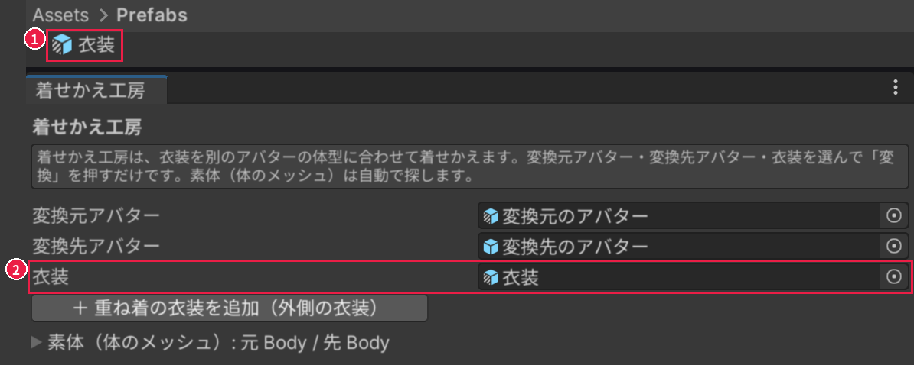
-
［変換］ボタンを押します。変換のあいだは、Unity が止まったように見えます。終わるまで、待ちます。
-
ヒエラルキーで、変換先のアバターの下を見ます。Prefab と同じ名前の衣装が、できています。
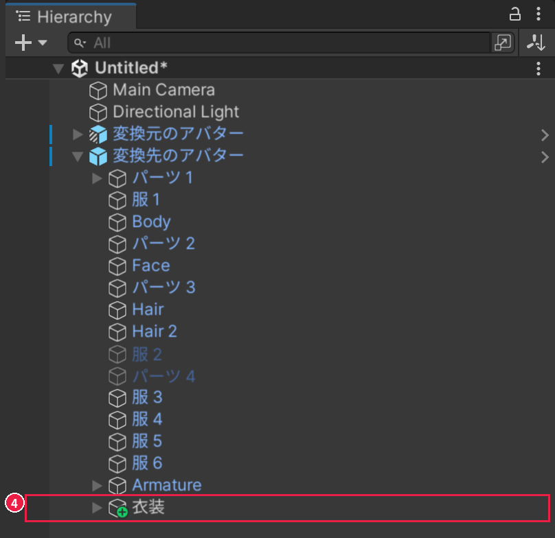
Prefab がたくさんあって探しにくいときは、検索の欄が便利です。ドラッグできないときは、［衣装］の欄の右の丸いボタンで、Prefab を選べます。Prefab は、ヒエラルキーに置かなくてかまいません。できた衣装が見えないときは、変換先のアバターの左の ▶ を押すと、開きます。
元の Prefab のファイルも、アバターも、変わりません。できた衣装は、元の衣装のコピーです。中の並び方や、付いている設定は、残ります。変わるのは、形と、骨の位置と、ウェイトです。ウェイトは、衣装が、骨の動きにどれだけついていくかの割合です。補助の骨（スカートに脚が入りにくくなるように、足す骨）が増えることもあります。ほかの衣装も、同じやり方で着せられます。うまくいかなかったときは、すぐに Ctrl+Z を押します。取り消せます。
名前は、Prefab のままです。同じ名前が先にあると、終わりに「 (着せかえ工房)」が付きます。
重ねて着せるときは、「重ね着の衣装を着せたい」の章を見ます。
気をつけること
- 骨で動かないものは、変換できません。
- Prefab の位置や向き、大きさを変えていると、ずれて読まれることがあります。大きくずれていると、「変換元の体から大きく離れています」という警告が出ます。
- 部分ごとの設定を付けるときは、確認の窓が先に出ます。くわしいやり方は、「一部だけ、形を変えたくない」の章にあります。
うまくいかないとき
- 警告に「名前で対応しませんでした」と出た。変換元のアバターが、その衣装に合っていません。または、衣装の骨の名前が違います。合うアバターを、入れ直してください。
- ［変換］ボタンが灰色のまま。赤いエラーのあとの「→」に、直し方があります。
- 変換が、なかなか終わらない。重い衣装は、時間がかかります。終わるまで、待ってください。
重ね着の衣装を着せたい
上着の下にシャツ、のように、重ねて着せたい
欄を増やすと、衣装を重ねて着せられます。内側に着るものから、順に入れます。たとえば、内側がシャツで、外側が上着です。どちらも、変換元のアバターに合うものを使います。外側のものは、内側のものに入り込まないように、合わせます。
先に、「はじめての練習」の手順 1 から 4 をやります。練習の衣装が残っていたら、先に［この変換を取り除く］で取り除きます。やることは、欄を増やして、ボタンを押すだけです。そのほかは、ふつうの変換と、同じです。
-
［＋ 重ね着の衣装を追加（外側の衣装）］ボタンを押します。［衣装］の欄が、2 つになります。「上の衣装から順に変換します」という案内が出ます。
-
［衣装 1（内側）］の欄に、内側に着るものをドラッグします。Prefab でも、変換元のアバターが着ているものでも、かまいません。
-
［衣装 2（外側へ）］の欄に、外側に着るものをドラッグします。
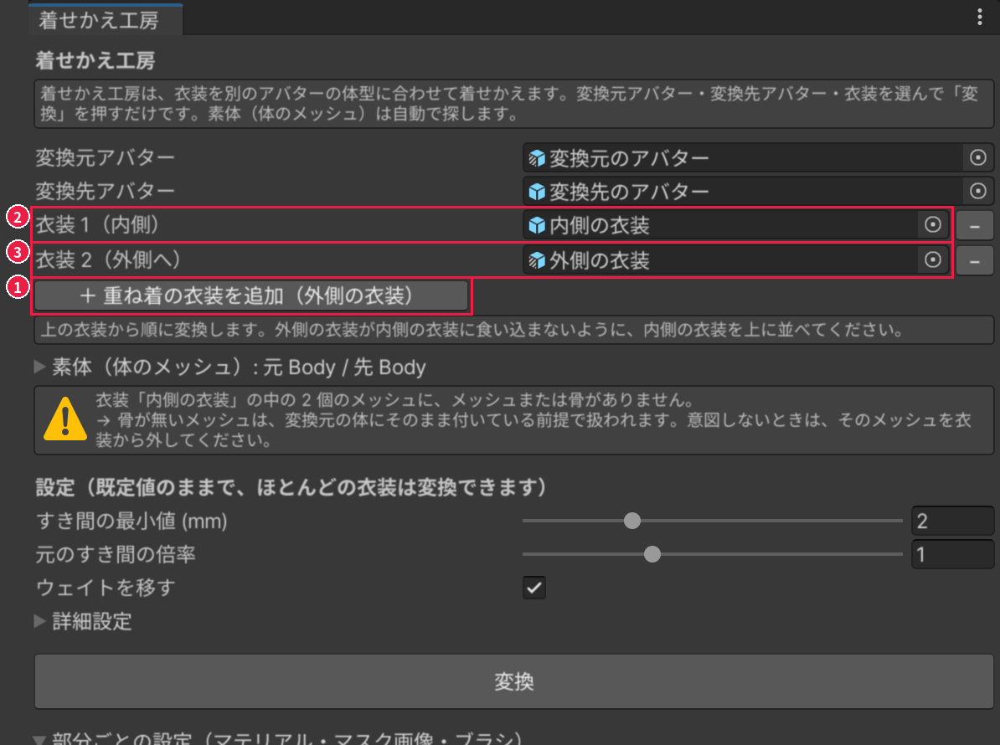
-
［変換］ボタンを押します。終わるまで、待ちます。
-
ヒエラルキーで、変換先のアバターの下を見ます。着せた数だけ、衣装が増えています。
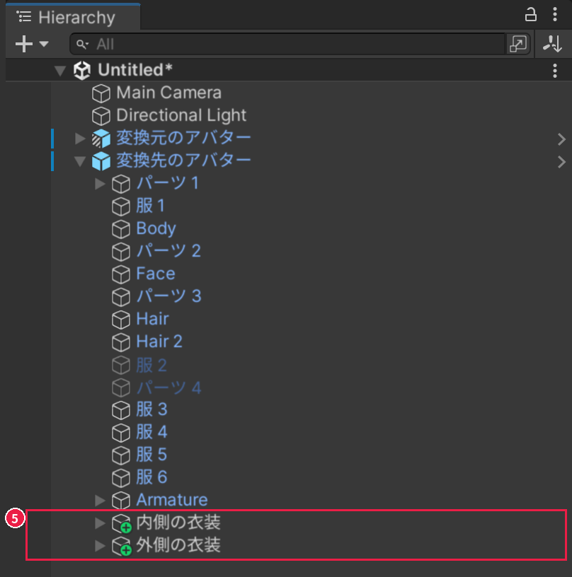
ドラッグできないときは、欄の右の丸いボタンから、選べます。衣装が見えないときは、変換先のアバターの左の ▶ を押すと、開きます。
欄を消したいときは、欄の右の［−］ボタンを押します。順番を入れかえるボタンは、ありません。入れかえたいときは、欄に入れ直します。空の欄は、とばされます。同じものを 2 つの欄に入れると、2 つ目は、とばされます。
「結果」の欄には、自動チェックの結果が、衣装ごとに出ます。場所を見るときは、［確認する衣装］で選んで、［貫通を確認］を押します。くわしいやり方は、「貫通の場所を確かめたい」の章にあります。
できあがったら、シーンビューで、重なりぐあいが見られます。うまくいかなかったときは、すぐなら Ctrl+Z で取り消せます。うまくいかないときは、「はじめての練習」の章を見ます。
気をつけること
- 内側に着るものは、上の欄に入れます。逆にすると、外側のものが、内側に入り込むことがあります。
- ウィンドウの設定は、すべてに、まとめて効きます。1 着だけ変えたいときは、部分ごとの設定（一部だけ変える設定）を使います。
- 1 着ずつ変換することもできます。ただ、そのときは、外側を内側に合わせるはたらきが、使われません。
- 重ね着のしくみは、動くことを確かめました。ただ、じっさいの衣装での見た目は、まだ確かめていません。3 着以上も、試していません。
- 時間は、着せる数だけ、かかります。
食い込みやぶかぶかを直したい
衣装が体に食い込む、またはぶかぶかに見える
食い込みは、体が衣装から出てしまうことです。ぶかぶかは、衣装が体からはなれて見えることです。直すには、設定を変えて、もう一度変換します。すき間（体と衣装の間のあき）を、大きくしたり、小さくしたりします。やることは、スライダーを動かして、ボタンを押すだけです。1 回で決めなくてもかまいません。なんどでも、変換し直せます。
先に、変換を 1 回やって、結果を見ておきます。やり方は、「はじめての練習」にあります。
-
「結果」の欄の自動チェックと、シーンビューを見ます。食い込みは、自動チェックの黄色い三角で分かります。ぶかぶかは、数には出ません。見た目で、決めます。
-
食い込むときは、［すき間の最小値 (mm)］のスライダーを、右へ動かします。体と衣装の間に、あけるすき間が、大きくなります。
-
ぶかぶかのときは、［元のすき間の倍率］のスライダーを、左へ動かします。1 のときは、変換元と同じすき間です。
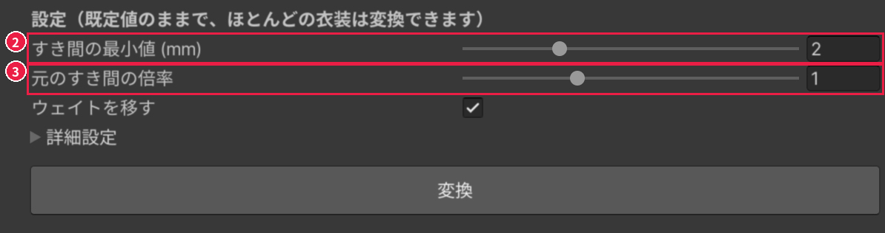
-
いまの自動チェックの数を、メモします。変換し直すと、前の数はなくなるためです。
-
もう一度、［変換］ボタンを押します。終わるまで、待ちます。
-
「結果」の欄の、衣装の行の右の文を見ます。前の結果と入れかわったという知らせが出ています。
-
「結果」の欄の新しい数と、メモした数を比べます。
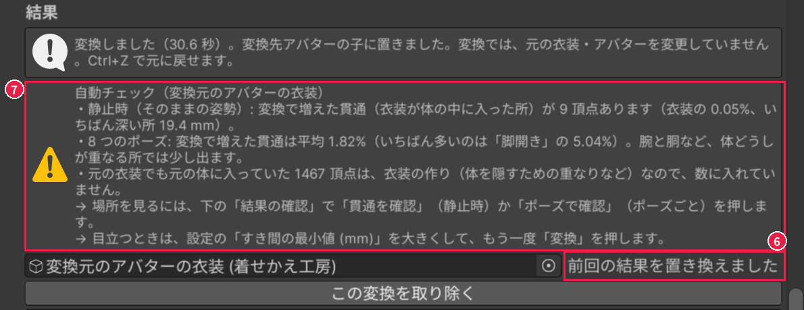
手順 2 と 3 は、どちらか 1 つでかまいません。［すき間の最小値 (mm)］のめやすは、0 から数 mm です。まず、少しだけ動かして、ためします。動かしすぎると、衣装が体からはなれて見えます。ちょうどよいところは、衣装ごとにちがいます。ぴったりしすぎるときは、［元のすき間の倍率］を右へ動かします。スライダーは、数を打ちこんでも動かせます。
手順 6 の知らせは、「前回の結果を置き換えました」です。前の結果は、新しいものに置き換わります。うまくいかなかったときは、すぐなら Ctrl+Z で取り消せます。または、スライダーを元に戻して、もう一度変換します。
気をつけること
- 設定は、いっしょに変換する衣装すべてに、まとめて効きます。
- 貫通は、自動ではすべて消えません。試した例でも、そでぐちやくつに、少し残りました。
- 腕と胴のように、体どうしがかさなるポーズの貫通は、この設定では直りません。
- 元の衣装に、もともとある貫通も、直りません。灰青の十字で、見分けることができます。くわしいやり方は、「貫通の場所を確かめたい」の章にあります。
- 変換し直すと、手で直したところも、消えます。残したいときは、くわしいやり方が、「取り消したい・変換し直したい」の章にあります。
- 一部だけのときは、部分ごとの設定で、そこのすき間を変えられます。くわしいやり方は、「一部だけ、形を変えたくない」の章にあります。
貫通の場所を確かめたい
衣装が体に入っている場所を、目で見たい
貫通の場所は、シーンビューに、十字の印で出ます。止まった姿でも、座りなどのポーズでも、見られます。見るだけなので、衣装はそのままです。2 つのやり方は、べつべつです。どちらか 1 つだけでも、かまいません。
先に、変換をすませます。［変換先アバター］と［変換元アバター］の欄は、そのままにします。シーンビューが閉じているときは、［Window > General > Scene］で出します。
止まった姿で見る
-
ウィンドウの下の方の［結果の確認（貫通・ポーズ）］の中身が出ているか、見ます。
-
［貫通を確認］ボタンを押します。シーンビューに、十字が出ます。
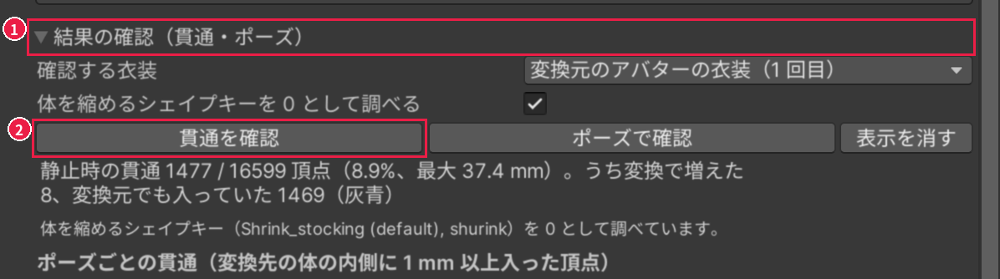
-
シーンビューで、十字の印を見ます。十字が出ないときは、体に入ったところがありません。
中身が出ていないときは、左の三角を押して開きます。［貫通を確認］のあと、下のポーズの表は、見出しだけになります。
黄色は浅いところ、赤は深いところです。灰青は、元の衣装でも体に入っていたところです。十字がたくさん集まると、面のように見えます。写真は、べつの衣装の例です。
ポーズで見る
-
［ポーズで確認］ボタンを押します。進み具合の窓が消えるまで、待ちます。8 つのポーズの表が出ます。
-
表の「座り」の行の［表示］ボタンを押します。
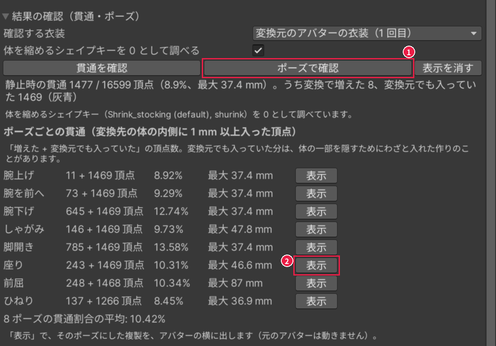
-
シーンビューで、アバターの横を見ます。座りのポーズのコピーが出ています。
表がもう出ていても、［ポーズで確認］から始めてかまいません。コピーの体は肌色で、髪や顔は一色です。衣装は青です。写真では、左がコピーで、右が元のアバターです。元のアバターは、動きません。見終わったら、［表示を消す］ボタンを押します。
直すかどうかの決め方
赤い十字の多いところを、いろいろな向きから見ます。肌が衣装の外に出ていなければ、そのままでかまいません。肌が出て目立つときは、すき間を大きくして、もう一度［変換］を押します。くわしいやり方は、「食い込みやぶかぶかを直したい」の章にあります。シーンビューの動かし方は、「Unity の基本の操作」にあります。数の見方は、「貫通の数を読みたい」にあります。
貫通の数を読みたい
出てくる数の、読みかたを知りたい
数は、頂点（形を作る点）の数です。体の内がわに、1 mm 以上入った頂点を数えます。
自動チェックの数
自動チェックの数は、「結果」の欄にあります。止まった姿で、増えたところがあるときに出ます。形は、「○ 頂点あります（衣装の ○%、いちばん深い所 ○ mm）」です。「着せたあとを、自動で確かめる」の「どれも 0」は、べつの数え方です。
この数で、直すかどうかを決めます。決め方は、「練習の結果を見る・取り消す」にあります。
ポーズの表の数
表は、ポーズごとに 1 行です。たとえば「6 + 0 頂点」は、2 つの数のたし算です。左の 6 は、変換で増えたぶんです。右の 0 は、前から入っていたぶんです。場所を見たいときは、左の数だけで足ります。その右の % は、体に入った頂点のわりあいです。「最大」は、いちばん深いところの深さです。行の［表示］を押すと、そのポーズが見られます。
気をつけること
- ポーズは、決まった 8 つだけです。ほかのポーズは、ためしていません。変換も、この 8 つで合わせています。
- 腕と胴のように、体どうしがかさなるポーズの貫通は、直せません。元の衣装でも、おきることです。
- 体と服が一体のアバターは、おしはかった体で測ります。ほんとうの体と、ちがうことがあります。数だけでなく、目でも確かめます。
- Unity を開き直すと、表はなくなります。もういちど、［ポーズで確認］ボタンを押します。
うまくいかないとき
- ［結果の確認（貫通・ポーズ）］が出ない。［変換先アバター］の欄が、からっぽです。または、変換した衣装がありません。
- 灰青の十字が出ない。変換の前から入っていたところが無いときは、出ません。「変換元との比較はできませんでした」と出たときは、［変換元アバター］の欄を見ます。元の衣装がシーンにあるかも、見ます。
体と服が一体のアバターに着せたい
肌と服が 1 つのパーツのアバターに、衣装を着せたい
体と服が一体のアバターは、肌と服が、ひとつながりになっています。そのため、服だけを外すことができません。それでも、衣装を着せることはできます。着せかえ工房が、服の下の体を、おしはかって合わせます。そのままでは、元の服が残って、できた衣装と重なって見えます。そこで、元の服を、ボタンで隠します。隠すだけで、元のファイルは変わりません。
先に、「はじめての練習」の手順 1 から 5 をやります。［変換先アバター］には、体と服が一体のアバターを入れます。ここまでは、ふつうのアバターと、同じです。
-
黄色い三角の印の警告が出るので、読みます。体と服が一体だと分かって、服の下の体をおしはかって合わせる、という知らせです。警告が出ても、そのまま変換することができます。
-
［変換］ボタンを押します。終わるまで、待ちます。
-
「結果」の欄の［変換先の元の服を隠す（Undoで戻す）］ボタンを押します。元の服が、見えなくなります。
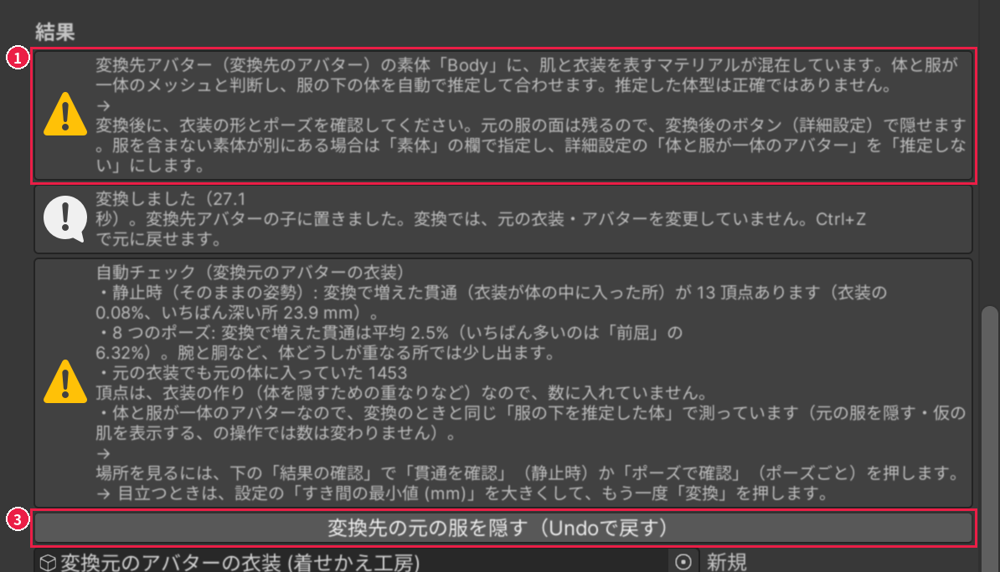
-
シーンビューで、衣装を見ます。脚や腕も、服といっしょに、消えて見えることがあります。
-
ウィンドウの［詳細設定］を開きます。
-
脚や腕も見たいときは、［元の服を隠して仮の肌を表示（試験的・Undoで戻す）］ボタンを押します。肌色の胴や腕や脚が、仮に出てきます。この手順は、飛ばしてもかまいません。
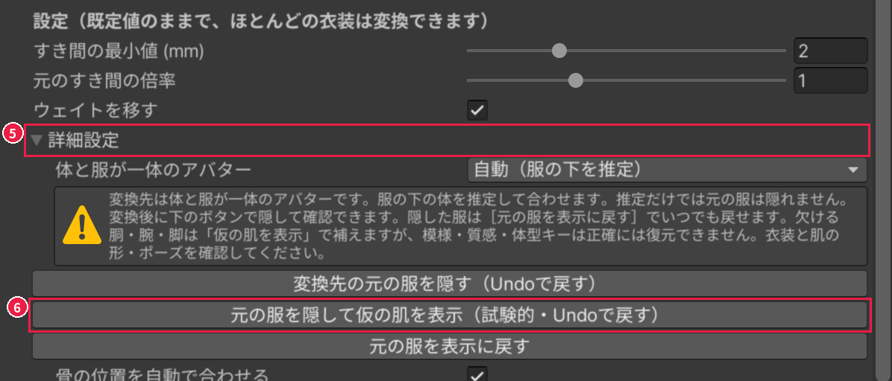
隠したあとは、［貫通を確認］などの表が、いったん消えます。もう一度、ボタンを押します。仮の肌（元の服を隠したところに出す、肌の色の面）は、見た目を確かめるためのものです。貫通を数えるときは、使いません。
隠した直後なら、Ctrl+Z で戻せます。あとからなら、［元の服を表示に戻す］ボタンで戻せます。このボタンは、隠したときだけ、「結果」の欄と［詳細設定］の中に出ます。Unity を開き直したあとでも使えます。
気をつけること
- 服の下の体は、おしはかった形です。本当の体と、違うことがあります。貫通の数も、その体で測ります。数だけでなく、目でも確かめることが大切です。
- 仮の肌は、まだ試しの機能です。顔や指、足先は、補いません。模様や質感も、もとには戻りません。
- 体と服が一体のアバターの服は、切り分けて、ほかのアバターへ移すことができません。
- マテリアル（色や質感を決める設定）の名前を見て、見分けています。当てはまらないときは、この警告も、隠すボタンも出ません。
- 服を含まない体が、別にあるときは、素体の欄に入れます。そのうえで、［詳細設定］の［体と服が一体のアバター］を、［推定しない］にします。
うまくいかないとき
- ［変換先の元の服を隠す（Undoで戻す）］ボタンが、灰色のまま。まだ変換していないためです。変換をすると、押せるようになります。
- 貫通を確かめたいときは、くわしいやり方が、「貫通の場所を確かめたい」の章にあります。
一部だけ、形を変えたくない
手首の飾りなど、一部だけ、元の形のまま残したい
衣装の一部だけ、変換のしかたを変えられます。これを、部分ごとの設定（一部だけ変える設定）と呼びます。ここでは、手首の飾りのマテリアルを使います。その部分を、変換先の体型に合わせないようにします。骨の動きには、ついていきます。
先に、ウィンドウの 3 つの欄を埋めておきます。変換の前でも、後でもかまいません。設定は、次に［変換］を押したときから使われます。
飾りのマテリアルを調べます
-
シーンビューで、手首の飾りを押します。はじめは、アバター全体が対象になります。
-
もう一度、同じところを押します。飾りのパーツだけが対象になります。
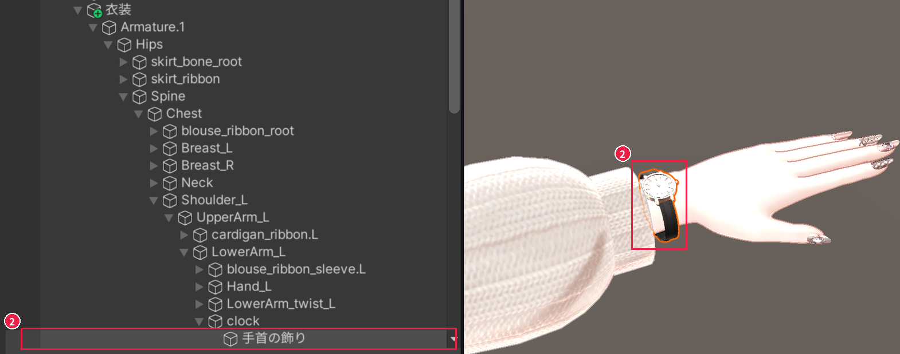
-
インスペクターの［Materials］を見ます。
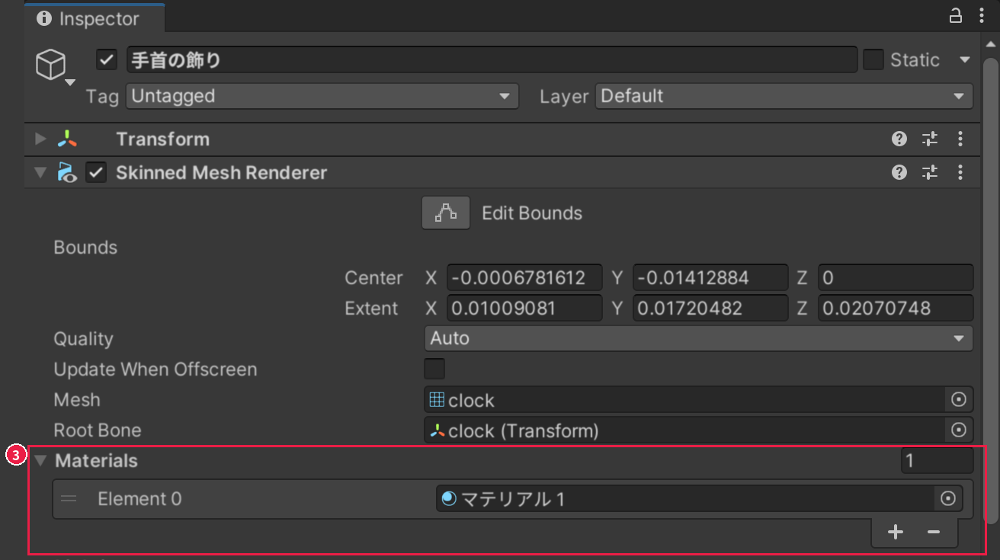
1 回目で飾りのパーツが対象になったときは、手順 2 はとばします。［Materials］は、Skinned Mesh Renderer の中にあります。閉じているときは、左の三角を押して開きます。並んだ名前が、そのパーツのマテリアルです。名前を覚えておきます。
名前が 2 つ以上あるときは、どれが飾りか分かりません。ほかの服と同じマテリアルのときも、分けられません。このときは、「ブラシで塗って、場所を決めたい」の章へ進みます。
部分を決めます
ここで場所を決めないと、設定が衣装のすべてに効きます。手順 2 から 4 は、とばさないでください。
-
ウィンドウの下にある、衣装の名前の横の［部分ごとの設定を追加］を押します。インスペクターに、設定が出ます。
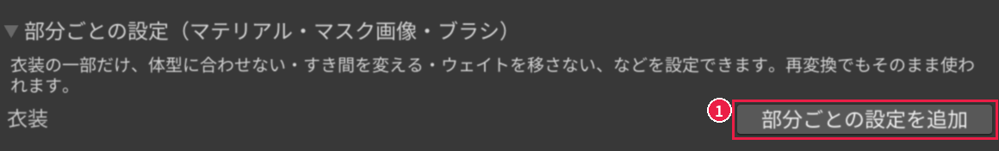
-
［マテリアルで指定］にチェックを入れます。
-
［衣装のマテリアルから追加...］を押します。マテリアルの名前の一覧が出ます。
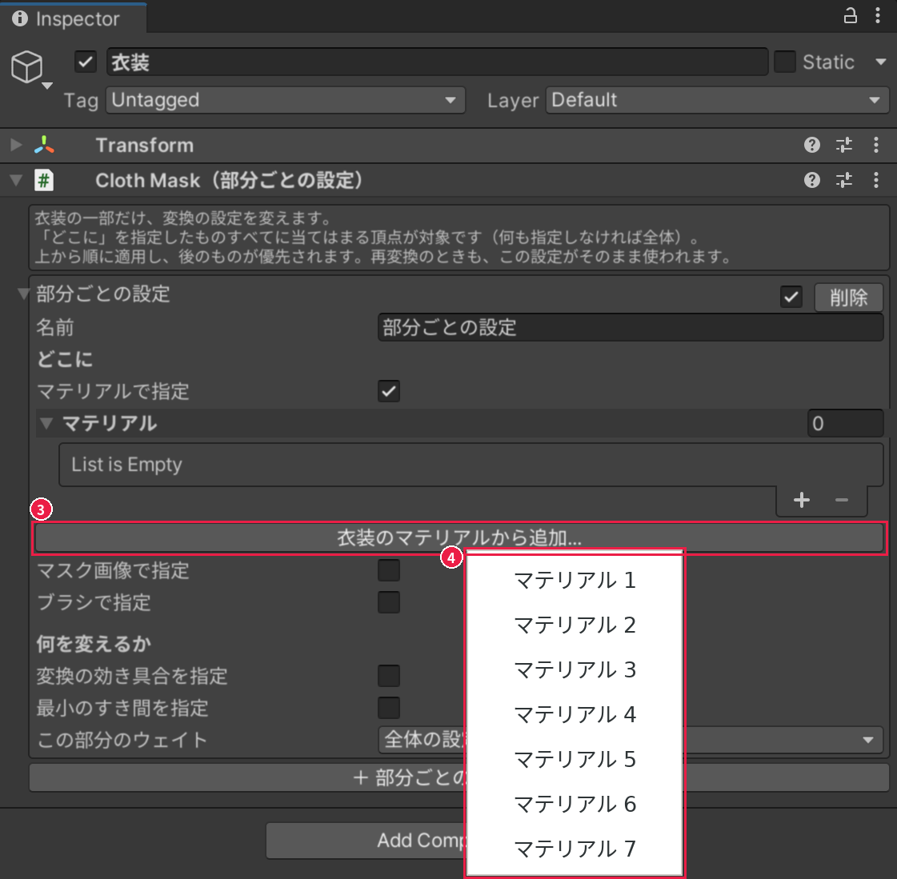
-
一覧から、調べた名前のマテリアルを選びます。［マテリアル］の欄に入ります。「Element 0」は、1 つ目という意味です。
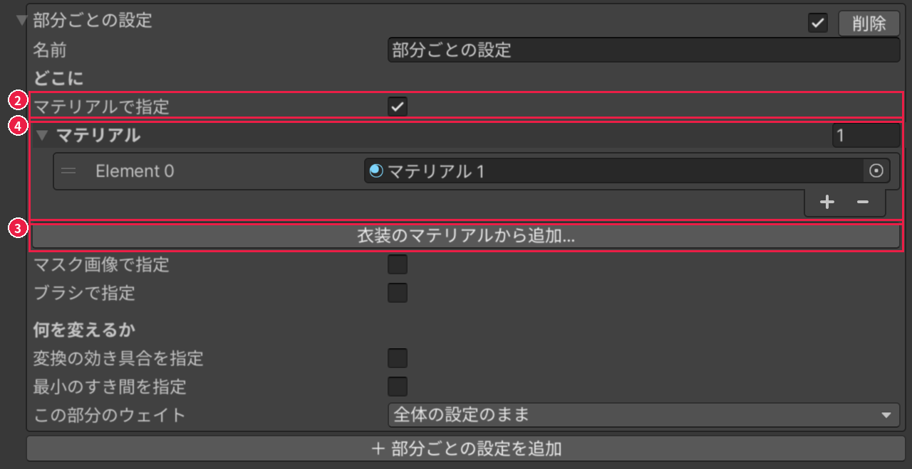
何を変えるかを決めます
-
［変換の効き具合を指定］にチェックを入れます。スライダーが出ます。
-
［効き具合］が 0 になっていることを確かめます。
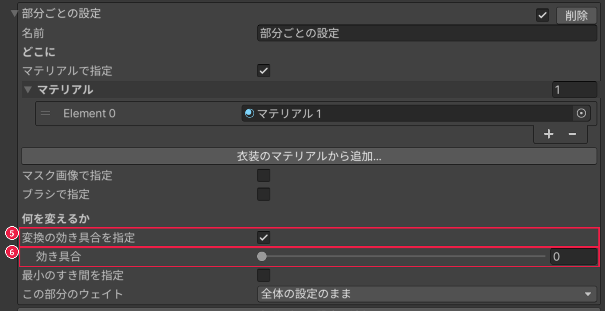
0 でないときは、スライダーを左の端まで動かします。数を打ちこんでも、かまいません。0 の部分は、変換先の体型に合わせません。1 なら、ふつうに合わせます。0 と 1 の間は、その割合だけ合わせます。
変換して確かめます
-
ウィンドウの［変換］を押します。
-
シーンビューで、手首の飾りを見ます。変換元で着ていたときと同じ形なら、できています。
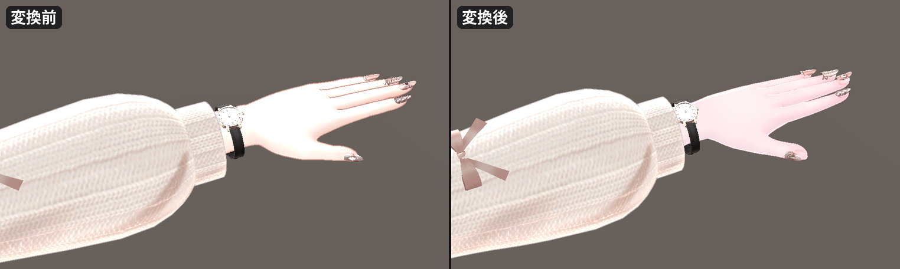
前に変換していれば、その結果と置き換わります。練習で隠した変換先の服は、隠れたままです。この設定は、衣装に残ります。変換し直しても、そのまま使われます。
ほかに変えられること
- ［最小のすき間を指定］: その部分だけ、体とのすき間を変えます。
- 膝や胸の先が体に入るときは、すき間を大きくします。
- ［この部分のウェイト］: その部分だけ、体からウェイトを移すかどうかを変えます。
- ウェイトは、衣装が、骨の動きにどれだけついていくかの割合です。
気をつけること
- この設定は、元の衣装に付きます。シーンの衣装なら、Ctrl+Z で取り消せます。
- ［衣装］にアバターそのものを入れたときは、ボタンはアバターの名前の横に出ます。設定はアバターに付き、マテリアルの一覧には体のものも並びます。
- Prefab を［衣装］の欄に入れたときは、先に確認の窓が出ます。［Prefab に追加する］を押すと、そのファイルが変わり、Ctrl+Z で戻せません。
- 同じ名前のマテリアルがほかにもあると、そこも対象です。
- 場所の決め方を 2 つ以上使うと、すべてに合うところだけが対象です。
うまくいかないときは、「困ったとき」を見てください。
ブラシで塗って、場所を決めたい
専用のマテリアルが無い部分を、塗って決めたい
専用のマテリアルが無い部分は、ブラシで塗って決められます。ブラシ（なぞって塗るもの）は、シーンビュー（3D の景色を見るウィンドウ）で使います。マスク画像（白と黒で、選ぶところを示した絵）でも、決められます。
先に、「一部だけ、形を変えたくない」の「部分を決めます」の手順 1 を終えておきます。衣装は、シーンに置いたものを使います。
ブラシで塗ります
-
［ブラシで指定］にチェックを入れます。
-
［塗るメッシュ］から、衣装のメッシュ（体や服の形そのもの）を選びます。
-
［ブラシで塗る］を押します。シーンビューの左上に、小窓が出ます。
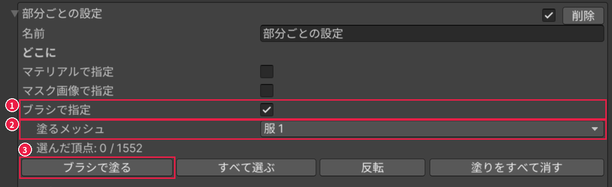
-
シーンビューで、衣装の上を左ドラッグします。なぞったところが、赤く光ります。
-
消すときは、Shift+左ドラッグです。
-
終わったら、［ブラシを終了］を押します。
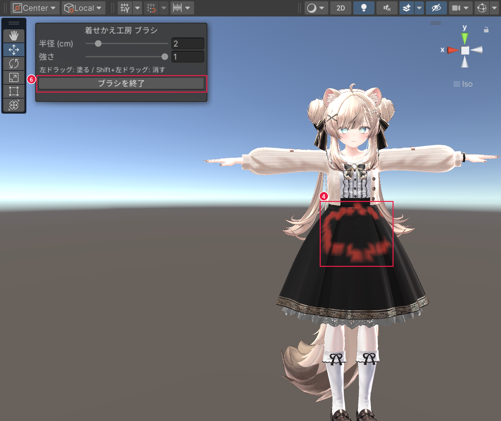
小窓の［半径 (cm)］で、ブラシの大きさを変えます。［強さ］で、塗りの濃さを変えます。塗った頂点（形を作る点）の数は、「選んだ頂点: N / M」に出ます。Ctrl+Z で、塗る前に戻せます。ここまでが、ブラシの使いかたです。
ほかのものを選ぶと、ブラシは終わります。Alt を押しながらドラッグすると、塗らずに、見る向きを変えられます。
マスク画像で決めます
ブラシとは別のやり方です。どちらか 1 つで、場所を決められます。
-
［マスク画像で指定］にチェックを入れます。
-
［マスク画像］の欄に、画像を入れます。
-
［対象の色］で、［白い所］か［黒い所］を選びます。
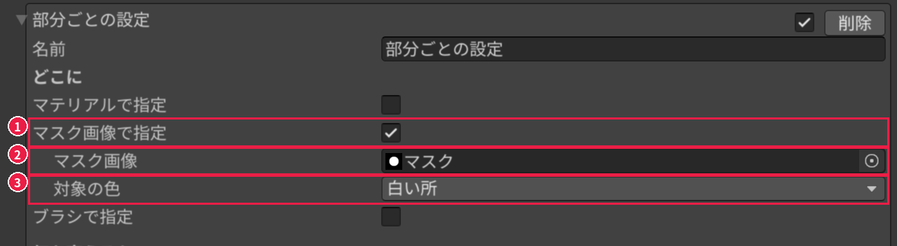
画像は、衣装の UV（絵を形にはるための地図）に合わせて作ります。png か jpg なら、そのまま使えます。画像を読めないときは、その部分は対象になりません。これで、場所が決まります。
そのあとは、「一部だけ、形を変えたくない」の「何を変えるかを決めます」から続けます。
気をつけること
- 塗る・消す・Ctrl+Z の仕組みは、確かめています。
- マウスで塗るときの感触は、確かめていません。
- 塗ったあとで、頂点の数が違うメッシュに入れ替えることがあります。
- そのときは、「メッシュの頂点数が、塗ったときと違います」と出ます。
- このときは、塗り直します。
- 場所の決め方を 2 つ以上使うと、すべてに合うところだけが対象です。
うまくいかないときは、「困ったとき」を見てください。
体のシェイプキーに、ついてこさせたい
胸の大きさなどを変えたとき、衣装もついてきてほしい
シェイプキー（形を変える設定）で、体の形を変えられます。たとえば、胸の大きさです。選んだキーと同じ名前のキーを、衣装にも作れます。先に、変換先アバターの体に、キーがあるか見ておきます。
合わせるキーを選びます
-
ウィンドウの［詳細設定］を開きます。
-
「変換先の体のシェイプキーに合わせる」で始まる折りたたみを開きます。（ ）の中の数は、チェックしたキーの数です。
-
合わせたいキーに、チェックを入れます。キーの名前は、アバターごとに違います。
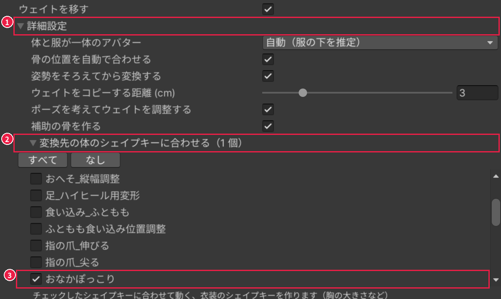
-
ウィンドウの［変換］を押します。終わるまで、待ちます。
［なし］を押すと、チェックがすべて外れます。［すべて］を押すと、すべてにチェックが入ります。チェックしなくても、衣装の近くの体を動かすキーは、自動で作られます。体を縮めるキーは、除きます。
結果を確かめます
-
ヒエラルキーで、変換した衣装の中のメッシュを選びます。メッシュは、体や服の形そのものです。
-
インスペクター（ものの設定が出るウィンドウ）で、［BlendShapes］を開きます。
変換先の体と同じ名前のキーが、並びます。これで、キーが衣装にも作られました。
体のキーと、つなぎます
- Modular Avatar（衣装をつけるのに使うもの）が入っていると、自動でつながります。
- ただし、1.18.7 以上の版が要ります。
- ［Modular Avatar で結ぶ］が、オンのときです。
- つながると、体のキーを動かしたとき、衣装のキーも動きます。
- 入っていないときや、古い版のときは、手でつなぎます。
- 体のキーを動かしたら、衣装の同じ名前のキーも、同じ値にします。
- このときは、「変換の途中で気づいた点」に、案内が出ます。
- どちらでも、変換はできます。
気をつけること
- 体を縮めるキーは、0 として合わせます。
- 縮めるキーに、ついてくるわけではありません。
- 体と服が一体（1 つのパーツになっている）のアバターは、体のキーを正確には戻せません。
- 確かめた Modular Avatar は、1.18.7 です。
- Unity の画面で、連動して動くかは、確かめていません。
- どれくらい合うかは、衣装しだいです。シーンビュー（3D の景色を見るウィンドウ）で見ると分かります。
うまくいかないときは、「困ったとき」を見てください。
座ったときのスカートを直したい
座ったり、しゃがんだりすると、スカートに脚が入る
座ると、スカートに脚が入ることがあります。そのために、補助の骨（スカートに脚が入りにくくなるように、足す骨）を作れます。骨は、動きのもとになるところです。はじめから、オンになっています。
設定を確かめます
-
ウィンドウの［詳細設定］を開きます。
-
［ポーズを考えてウェイトを調整する］に、チェックが入っているか見ます。
-
［補助の骨を作る］も、同じように見ます。
-
ウィンドウの［変換］を押します。
ウェイトは、衣装が、骨の動きにどれだけついていくかの割合です。補助の骨を作ると、「変換の途中で気づいた点」に、次の文が出ます。補助の骨 N 本に Rotation Constraint を付けました（…）。
補助の骨には、Rotation Constraint（ほかの骨の回転につられて動くパーツ）が付きます。この文が出ないときは、補助の骨は作られていません。
座りのポーズを見ます
表は、［結果の確認（貫通・ポーズ）］の中にあります。表が出ていないときは、先に［ポーズで確認］を押します。
-
表の「座り」の行の［表示］を押します。
-
シーンビューで、アバターの横に出たコピーを見ます。元のアバターは動きません。
数の見方は、「貫通の数を読みたい」の章にあります。
比べたいときは、先に「座り」の数を書き留めます。そのあと、［補助の骨を作る］のチェックを外します。もう一度、変換します。新しい「座り」の数と、書き留めた数を比べます。前の結果も残すときは、［変換し直しても残す］を使います。
気をつけること
- 補助の骨は、脚のまわりで、体から離れた布に作ります。
- 使わないほうが体に入りにくいときは、作りません。
- どれだけ減るかは、衣装しだいです。
- 下ろした手がスカートに入るのは、補助の骨では直りません。
- それには、コライダー（ぶつかるところを決める部品）を使います。
- VRChat の中の話です。
- 「Modular Avatar や PhysBone と使いたい」の章を見ます。
- 腕と胴のように、体どうしが重なるところは、直せません。
- 確かめるポーズは、8 つだけです。ほかのポーズでの形は、確かめていません。
- オンとオフは、衣装のすべてに、まとめて効きます。
- 衣装ごとに変えたいときは、1 着ずつ変換します。
- VRChat の中での動きは、確かめていません。
うまくいかないときは、「困ったとき」を見てください。
Modular Avatar や PhysBone と使いたい
衣装の揺れ物や、Modular Avatar の着せ方と合わせたい
この章で使うものは、次の 2 つです。1 つ目は、Modular Avatar（衣装をつけるのに使うもの）です。2 つ目は、VRChat SDK（VRChat で使うもの）です。SDK があると、PhysBone（髪や服をゆらす部品）も引き継げます。どちらも無くても、変換はできます。この章の機能は、入っているときだけ使えます。VRChat の項目は、SDK があるときだけ出ます。入れ方は、それぞれの案内を見てください。
つなぎ方を決めます
-
ウィンドウの［詳細設定］を開きます。
-
［Modular Avatar で結ぶ］を確かめます。
-
VRChat の 3 つの項目を確かめます。
-
ウィンドウの［変換］を押します。終わるまで、待ちます。
［Modular Avatar で結ぶ］は、はじめからオンです。オンだと、衣装の Armature（骨をまとめたもの）を残します。それを、アバターに結びます。オフのときは、衣装を変換先の骨に直接つなぎます。どちらでも、変換できます。Modular Avatar が無いときは、灰色になります。
3 つの項目は、はじめのままでも使えます。1 つ目は、衣装の PhysBone を引き継ぎます。2 つ目は、コライダー（ぶつかるところを決める部品）です。スカートに足します。手や脚が、布に入りにくくなります。3 つ目は、PhysBone が無い衣装に、新しく付けます。3 つ目だけ、はじめはオフです。それぞれの名前と働きは、「画面の説明」の章にあります。
コライダーは、VRChat の中で、布を押し出します。迷ったら、そのままにします。
結果を確かめます
-
「結果」の欄の、「変換の途中で気づいた点」を読みます。
-
ヒエラルキーで、変換した衣装の Armature を選びます。
-
インスペクターに、MA Merge Armature（骨をつなぐパーツ）があるか見ます。付くのは、［Modular Avatar で結ぶ］がオンのときだけです。
項目がオンで、対象があると、結果の文が出ます。「PhysBone N 個を引き継ぎました」などです。文が出ないときは、項目がオフか、対象がありません。それでも、変換はできています。
気をつけること
- VRChat の中の揺れは、確かめていません。
- 押し出された見た目も、確かめていません。
- 設定した値と、置いた位置や形は、確かめています。
- コライダーを足すと、アバター全体の数が増えることがあります。
- パフォーマンスランク（アバターの重さの目安）は、保証しません。
- 数は、［VRChat SDK > Show Control Panel］で見ます。
- 確かめた SDK は、3.10.5 です。
- 確かめた Modular Avatar は、1.18.7 です。
- VRChat へのアップロードは、確かめていません。
うまくいかないときは、「困ったとき」を見てください。
取り消したい・変換し直したい
取り消したい。前のものを残して、もう一度ためしたい
元の衣装とアバターのデータは、そのまま残ります。いつでも元に戻せます。
この章では、言葉を次の意味で使います。
- 取り消す: Ctrl+Z で、さいごの操作を戻すこと。Ctrl+Y で、取り消す前に戻せます。
- 取り除く: ［この変換を取り除く］で、できた衣装を消すこと。
- 変換し直す: 設定を変えて、もういちど［変換］を押すこと。
やり方は 4 つあり、手順はべつべつです。したいことの見出しだけを、読めば足ります。
すぐに取り消す
-
Ctrl+Z を押します。
変換のすぐあとなら、1 回で、まとめて取り消されます。作った骨と「結果」の欄も、いっしょに消えます。そのあとで服を選んだり、隠したりしたときは、そちらから順に戻ります。できた衣装が消えるまで、押します。右の画像のように、Ctrl+Y で戻せます。
あとから取り除く
-
ヒエラルキーで、変換先アバターの下にある、できた衣装を選びます。
-
インスペクターの［この変換を取り除く］を押します。
アバターに足した物（補助の骨など）も、いっしょに取り除きます。Unity を開き直したあとでも使えます。取り除いたあとも、Ctrl+Z で取り消せます。同じボタンは、ウィンドウの「結果」の欄にもあります。着せかえ工房で隠した元の服は、［元の服を表示に戻す］で戻せます。ファイルの片付けは、「変換で作ったファイルを片付けたい」にあります。
設定を変えて、変換し直す
-
設定を変えます。たとえば、［すき間の最小値 (mm)］です。
-
ウィンドウの［変換］を押します。
前のできあがりは、新しいものと入れかわります。「結果」の欄に、「前回の結果を置き換えました」と出ます。前のものを手で直していたときは、その直しはなくなります。残したいときは、次のやり方を使います。
前のものを残して、変換し直す
-
ヒエラルキーで、残したい衣装を選びます。
-
F2 キーを押して、名前を変えます。あとで、見分けるためです。
-
インスペクターで、［変換し直しても残す］にチェックを入れます。
-
ウィンドウで、設定を変えます。
-
ウィンドウの［変換］を押します。
-
「結果」の欄に、新しい衣装の行が出たか確かめます。
［変換し直しても残す］は、「Converted Outfit Record (Script)」の中にあります。VRChat SDK が入っているときは、名前の頭に「SDK」が付きます。「SDK Converted Outfit Record (Script)」です。新しいものは、べつに置かれます。2 つは、同じところに重なります。見くらべるときは、かたほうの名前の左のチェックを外します。
気をつけること
- 変換がとちゅうでうまくいかないときは、シーンには何も残りません。
- Unity を開き直すと、「結果」の欄は消えます。シーンを保存していれば、できた衣装はそのままです。
- 数を見るときは、［貫通を確認］か［ポーズで確認］を、もういちど押します。
うまくいかないときは、「困ったとき」を見てください。
変換で作ったファイルを片付けたい
使わなくなったファイルを、消したい
変換すると、メッシュ（体や服の形そのもの）などのファイルができます。ファイルは、［保存先フォルダ］に入ります。はじめの保存先は、Assets/KisekaeKobo_Converted です。着せかえ工房のフォルダの外にあるので、入れ直しても消えません。
使われなくなったファイルは、自動で片付きます。今すぐ片付けることもできます。
自動の片付け
ウィンドウのいちばん下に、「変換で作ったファイルの片付け」があります。その下の［使われなくなった、変換で作ったファイルを自動で片付ける］が、自動の片付けです。
はじめから、チェックが入っています。変換のたびと、Unity を起動したときに、片付けます。起動のときに調べるのは、はじめの保存先だけです。どのシーンからも使われていないファイルだけを、消します。今回の起動で作ったファイルは、次の起動まで残します。Ctrl+Z で戻ることがあるからです。
今すぐ片付けます
自動の片付けとは別のやり方です。この手順で消したファイルは、Ctrl+Z でも戻りません。
-
［いま片付ける...］を押します。
-
確認の窓の文を読みます。
-
［削除する］か、［キャンセル］を押します。
窓に、消すファイルの数が出ます。消すものが無いときは、「片付ける、変換で作ったファイルはありません」と出ます。そのときは、［OK］を押します。
今回の起動で作った、使われていないファイルがあると、ボタンが 3 つになります。3 つ目は、［Undo の履歴も消して片付ける］です。それも、消せます。ただし、Undo の履歴が、すべて消えます。
気をつけること
- 消したファイルは、戻りません。
- ［Undo の履歴も消して片付ける］を押すと、Ctrl+Z で戻せる操作も無くなります。
- ヒエラルキーで衣装を消しても、ファイルは残ります。
- シーンを保存すると、次の起動のあとの片付けで消えます。
- ［設定を既定値に戻す］を押しても、［保存先フォルダ］は戻りません。
うまくいかないときは、「困ったとき」を見てください。
画面の説明（入力と設定）
着せかえ工房のウィンドウは、上から順に使います。この章では、上の半分のことを書きます。ここでは、欄やボタンの名前と、はたらきを書きます。やり方は、ほかの章にあります。はじめての練習は、「はじめての練習」にあります。
-
メニューバーの［Tools > 着せかえ工房］を選びます。
画像の赤い数字は、下のリストの番号です。
入力（変換元・変換先・衣装）
この 3 つを入れると、変換できます。ヒエラルキーから、ドラッグして入れます。欄の右の丸いボタンから、選ぶこともできます。まちがえたときは、入れ直します。空の欄があると、白いふきだしの案内が出ます。
- ①［変換元アバター］: もともと衣装が合っているアバターです。
- ②［変換先アバター］: 着せたいアバターです。
- ③［衣装］: 変換する衣装です。Prefab も入れられます。
- ③にアバターそのものを入れると、着ている服をまとめて変換します。
- ④［＋ 重ね着の衣装を追加（外側の衣装）］: 衣装の欄を増やします。
- 欄が増えると、［衣装 1（内側）］［衣装 2（外側へ）］になります。
- 「上の衣装から順に変換します」という案内も出ます。
- ［−］: 衣装の欄を消します。
素体（体のメッシュ）
素体は、アバターの体の部分です。ふつうは、自動で見つかります。ここは、さわらなくても、かまいません。名前や、骨の使いかたで、さがしています。見つからないときや、まちがっているときは、じぶんで入れます。まよったときは、見つかったもののままにします。
- ⑤「素体（体のメッシュ）: 元 … / 先 …」: 見つけたものの名前が出ます。
- 開くと、選んだわけも見られます。
- 「手動で指定（空なら自動）」: ［＋ 素体を追加］で入れます。
変換前の案内
⑥欄を入れると、すぐに案内が出ます。「→」のあとに、直し方が書いてあります。案内の印は、3 つあります。
- 赤い印は、エラーです。直すまで、［変換］は灰色で押せません。
- 黄色い三角の印は、警告です。変換はできます。
- 白いふきだしの印は、お知らせです。読むだけでかまいません。
3 つの欄が空のときは、白いふきだしで、選ぶものを知らせます。このときの［変換］の下には、「上の案内のとおりに選ぶと、変換できます。」と出ます。赤いエラーがあるときは、「上の「エラー」を直すと、変換できます。」と出ます。
設定（すき間・ウェイトを移す）
はじめの値のままで、ほとんどの衣装は変換できます。まよったときは、そのままにします。どれも、あとから変えられます。ほかの欄は、さわらなくてかまいません。数を変えたら、もういちど変換します。
- ⑦［すき間の最小値 (mm)］: 体と衣装の間にあける、いちばん小さいすき間です。
- 体に食い込むときは、大きくします。
- ⑧［元のすき間の倍率］: 変換元のすき間を、なん倍にするかです。1 で同じです。
- ぶかぶかに見えるときは小さく、ぴったりしすぎるときは大きくします。
- ⑨［ウェイトを移す］: 変換先の体のウェイトを、衣装にうつします。
- ふつうは、オンのままにします。
- ⑩［詳細設定］: 折りたたみです。「画面の説明（詳細設定）」の章にあります。
- ⑪［変換］: 押すと、変換が始まります。
- 終わるまで、Unity は動かせません。
数の変え方は、「食い込みやぶかぶかを直したい」の章にあります。
画面の説明（結果と確認）
変換が終わると、ウィンドウの下に、2 つの欄が出ます。この章では、その名前と、はたらきを書きます。
-
ウィンドウの［変換］を押します。
赤い数字は、下の一覧の番号です。
結果
ここには、変換のようすが出ます。まず、②の文を読むと、だいたいのようすが分かります。白いふきだしで「ありません」と出たら、止まった姿では、増えたところはありません。黄色い三角のときは、シーンビューで見て、決めます。決め方は、「練習の結果を見る・取り消す」にあります。
- ①「変換しました…」: 終わったという知らせです。
- Ctrl+Z で戻せることも、書いてあります。
- ②「自動チェック（衣装名）」: 貫通の数です。
- 止まった姿と、8 つのポーズで、調べます。
- ③衣装の欄: できあがったものです。
- 横に「新規」か、「前回の結果を置き換えました」と出ます。
- ④［この変換を取り除く］: この衣装と、アバターに足したものを、まとめて取り除きます。
- Ctrl+Z で戻せます。
- 「変換の途中で気づいた点」: 黄色い三角の案内です。気がついたことが、ならびます。
体と服が一体のアバターでは、［変換先の元の服を隠す（Undoで戻す）］も出ます。［詳細設定］の中にも、同じボタンがあります。隠した服は、［元の服を表示に戻す］で戻せます。隠したときだけ、出るボタンです。
Unity を開き直すと、「結果」の欄は消えます。下の欄は、そのまま使えます。数は、ボタンを押して、もういちど調べます。
結果の確認（貫通・ポーズ）
できた衣装があると、この欄が出ます。変換のあと、すぐに調べたものが、もう入っています。数が小さいほど、入っているところが少ないです。気になるところだけ、見ればじゅうぶんです。ボタンは、なんどでも押せます。どれも、見るためのボタンです。押しても、衣装はそのままです。
- ⑤［結果の確認（貫通・ポーズ）］: 折りたたみです。
- ⑥［確認する衣装］: 調べる衣装を、ここで決めます。
- ⑦［体を縮めるシェイプキーを 0 として調べる］: はじめはオンです。
- 「Shrink」か「縮」が入ったキーを、0 にして調べます。
- 「__Shrink__」のような区切りの下のキーも、同じです。
- ⑧［貫通を確認］: シーンビューに、十字の印を出します。
- 少しだけ入っているところは、黄色です。深いところは、赤です。
- 前から入っていたところは、灰青です。
- ⑨［ポーズで確認］: 8 つのポーズで、数えます。
- 座りや、しゃがみなどです。
- 押しても、元のアバターは、そのままです。
- ⑩［表示を消す］: 印とコピーを消します。
- 見おわったら、押します。
- ⑪「静止時の貫通 …」: 止まった姿の数です。
- 0 なら、1 mm より深く入ったところは、ありません。
- ⑫ポーズの表: ポーズごとの数が、ならびます。
- 数は、頂点の数です。
- 行の［表示］を押すと、そのポーズのコピーが、アバターの横に出ます。
- ⑬「8 ポーズの貫通割合の平均」: 8 つをならした数です。
数の見かたは、「貫通の数を読みたい」の章にあります。
画面の説明（詳細設定）
［詳細設定］は、ふだんは閉じています。ほとんどの衣装は、はじめの設定のまま変換できます。こまったときや、細かく決めたいときに、開きます。どれも、あとから変えられます。
-
ウィンドウの［詳細設定］を開きます。
赤い数字は、下の数字と同じです。
詳細設定
- ①［体と服が一体のアバター］: 2 つから選びます。
- ［自動（服の下を推定）］と［推定しない］です。
- はじめは［自動（服の下を推定）］です。
- くわしくは、「体と服が一体のアバターに着せたい」の章にあります。
- 変換先が体と服が一体のときだけ、次のボタンが出ます。
- ［変換先の元の服を隠す（Undoで戻す）］: 元の服を隠します。
- ［元の服を隠して仮の肌を表示（試験的・Undoで戻す）］: 仮の肌を出します。
- 変換する前は灰色で、「変換すると押せます。」と出ます。
- ［元の服を表示に戻す］: 隠した元の服を戻します。隠したときだけ出ます。
- ②［骨の位置を自動で合わせる］: はじめはオンです。
- 衣装の骨を、変換先の骨に合わせます。
- ふつうは、このままです。
- ③［姿勢をそろえてから変換する］: 向きの違いを、そろえます。
- はじめは、オンです。
- たとえば、A ポーズと T ポーズ（腕を下げた姿と、横に広げた姿）の違いです。
- 終わると、元のポーズに戻ります。
- ④［ウェイトをコピーする距離 (cm)］: 近さの目安です。
- この距離より体に近いところは、体のウェイトをそのまま使います。
- ［ウェイトを移す］がオンのときに、働きます。
- ⑤［ポーズを考えてウェイトを調整する］: 体に入りにくくします。
- はじめは、オンです。
- いろいろなポーズで、スカートの前などを調べます。
- 立った姿の形は、変わりません。
- ⑥［補助の骨を作る］: スカートなどに、補助の骨を作ります。
- はじめは、オンです。
- 「座ったときのスカートを直したい」の章にあります。
- ⑦「変換先の体のシェイプキーに合わせる」: 折りたたみです。（ ）の中に、チェックしたキーの数が出ます。
- チェックしたシェイプキー（形を変える設定）と同じ名前のキーを、衣装にも作ります。
- チェックしなくても、変換できます。
- ［すべて］で、すべてにチェックが入ります。
- ［なし］で、チェックが外れます。
- ⑧［Modular Avatar で結ぶ］: はじめはオンです。
- Modular Avatar（衣装をつけるのに使うもの）が無いと、灰色になります。
- そのままで、かまいません。
VRChat の項目
VRChat SDK（VRChat で使うもの）が入っているときだけ、出ます。Modular Avatar が無くても、使えます。使いかたは、「Modular Avatar や PhysBone と使いたい」の章にあります。
- ⑨［PhysBone を引き継ぐ（VRChat）］: はじめはオンです。
- 衣装の PhysBone（髪や服をゆらす部品）を、同じ骨に付け直します。
- そのままで、かまいません。
- ⑩［スカートに手・腕・脚の当たり判定（VRChat）］: はじめはオンです。
- スカートの PhysBone に、手・前腕・太もものコライダー（ぶつかるところを決める部品）を足します。
- ⑪［スカートの骨に PhysBone を付ける（VRChat）］: はじめはオフです。
- PhysBone が無い衣装の、スカートの骨に付けます。
保存先と、はじめの値
- ⑫［保存先フォルダ］: 変換の結果を入れる場所です。
- はじめの場所は、
Assets/KisekaeKobo_Convertedです。 - ⑬［設定を既定値に戻す］: 設定を、はじめに戻します。
- こまったときに、押します。
- ［保存先フォルダ］だけは、戻りません。
画面の説明（部分ごとの設定）
この章では、部分ごとの設定のことを書きます。ウィンドウの下のほうと、インスペクターに出ます。やり方は、「一部だけ、形を変えたくない」の章にあります。
-
ウィンドウの下の、［部分ごとの設定を追加］を押します。
赤い数字は、下のリストの番号です。
部分ごとの設定（ウィンドウ）
- ［部分ごとの設定（マテリアル・マスク画像・ブラシ）］: 折りたたみで、はじめは開いています。
- 衣装の名前のよこに、ボタンが出ます。
- ［部分ごとの設定を追加］: 衣装に、設定を付けます。
- 付けたあとは、［設定を開く］になります。
- Prefab のファイルのときは、確認の窓が出ます。
- ［Prefab に追加する］で付けます。［キャンセル］でやめます。
部分ごとの設定（インスペクター）
- ①［名前］: 設定の名前です。［削除］で消します。
- ［削除］の左のチェックを外すと、その設定は使われません。
- ［＋ 部分ごとの設定を追加］: 設定をもう 1 つ足します。ウィンドウのボタンとは別です。
- 上から順に使います。あとのものが優先です。
- まよったときは、ひとつだけ作れば、じゅうぶんです。
- 「どこに」: どの部分かを決めます。
- ②［マテリアルで指定］: マテリアルを使う部分です。
- ［衣装のマテリアルから追加...］で、一覧から入れます。
- ③［マスク画像で指定］: 絵の白い所か、黒い所です。
- ［対象の色］で、［白い所］か［黒い所］を選びます。
- ④［ブラシで指定］: 塗った部分です。
- 「何を変えるか」: どう変えるかを決めます。
- ⑦［変換の効き具合を指定］: ［効き具合］が 0 なら、そこは変換先の体型に合わせません。骨の動きには、ついていきます。
- ⑧［最小のすき間を指定］: ［すき間 (mm)］で、体とのすき間を決めます。
- ⑨［この部分のウェイト］: ［全体の設定のまま］［移す］［移さない］から選びます。
ブラシ
- ⑤［塗るメッシュ］: 塗るメッシュを選びます。
- 「選んだ頂点: N / M」: 塗った頂点の数です。
- ⑥［ブラシで塗る］: ブラシを始めます。始めると、［ブラシを終了］になります。
- ［すべて選ぶ］、［反転］、［塗りをすべて消す］: 塗りを、まとめて変えます。
- シーンビューの小窓「着せかえ工房 ブラシ」: ［半径 (cm)］と［強さ］を変えます。
- 左ドラッグで塗り、Shift+左ドラッグで消します。
- まちがえても、Ctrl+Z で取り消せます。
変換の記録
- 変換した衣装に付く、印のパーツです。
- ［変換し直しても残す］: オンにすると、変換し直しても、その衣装は残ります。
- ［この変換を取り除く］: この衣装と、アバターに足したものを、まとめて取り除きます。Ctrl+Z で取り消せます。
- ほかは、見るだけです。
変換で作ったファイルの片付け
- ［使われなくなった、変換で作ったファイルを自動で片付ける］: はじめはオンです。
- ［いま片付ける...］: 確認の窓が出ます。
- ［削除する］で消します。消したファイルは戻りません。
- ［Undo の履歴も消して片付ける］は、Undo の履歴が、すべて消えます。
くわしくは、「変換で作ったファイルを片付けたい」の章にあります。
困ったとき
まず、ウィンドウの赤や黄色の案内を読みます。「→」のあとに、直し方があります。
［変換］が灰色で押せない
- どうなっている: 空の欄があるか、赤いエラーが出ています。
- どうすれば: 案内を読んで、欄を入れるか直します。
「Prefab のアセットのままです」と出る
- どうなっている: アバターを、ファイルのまま入れています。衣装は、ファイルのままでかまいません。
- どうすれば: アバターをヒエラルキーに置きます。置いたほうを入れ直します。
「親子の関係になっています」と出る
- どうなっている: 片方のアバターが、もう片方の子です。
- どうすれば: ヒエラルキーで、別々の場所に分けます。
「Humanoid ではありません」と出る
- どうなっている: 人型の骨の設定がありません。
- どうすれば: モデルの［Rig］タブを開きます。［Animation Type］を Humanoid にします。［Apply］を押します。
「素体（体のメッシュ）が見つかりません」と出る
- どうなっている: 体のメッシュが分かりません。
- どうすれば: 「素体（体のメッシュ）」を開きます。［＋ 素体を追加］を押します。出た欄に、体のメッシュを入れます。
「衣装「…」が変換先アバターの中にあります」と出る
- どうなっている: 変換先に着せた服を、衣装に入れています。
- どうすれば: 変換元に着せた衣装か、衣装の Prefab を入れます。
「1頂点に5本以上」と出る
- どうなっている: 1 つの頂点（形を作る点）が、5 本以上の骨で動きます。
- どうすれば: 4 本までに直したメッシュを、3D ソフトで用意します。
「体と服が一体のメッシュと判断し」と出る
- どうなっている: 体と服が 1 つのメッシュです。
- どうすれば: そのまま変換できます。
メニューに［Tools > 着せかえ工房］が出ない
- どうなっている: 入っていないか、ほかのエラーで読めません。
- どうすれば: Project ウィンドウの「Assets」を見ます。「KisekaeKobo」が無ければ、もう一度入れます。
- あれば、Console の赤いエラーを読みます。Console は［Window > General > Console］で出ます。
入れ直したあと、赤い「CS2001」が出る
- どうなっている: 消えたファイルを、Unity が探しています。一時的なものです。
- どうすれば: Unity を開き直します。
変換が終わらず、固まって見える
- どうなっている: 変換中は、Unity を動かせません。
- どうすれば: 進み具合の表示が消えるまで、待ちます。
「変換中にエラーが起きました」と出る
- どうなっている: 思わぬ問題です。シーンには、何も残りません。
- どうすれば: Console の赤い文を見て、入れたものを見直します。直らなければ、その文を控えて問い合わせます。
衣装が体に食い込む
- どうなっている: すき間が足りません。
- どうすれば: ［すき間の最小値 (mm)］を大きくします。もう一度、変換します。
元の服と衣装が重なって見える
- どうなっている: 体と服が一体で、元の服が残っています。
- どうすれば: ［変換先の元の服を隠す（Undoで戻す）］を押します。見えるように戻すときは、［元の服を表示に戻す］を押します。
Ctrl+Z のあとも、ファイルが残る
- どうなっている: 今回の起動で作ったファイルは、次の起動まで残します。
- どうすれば: 使われていなければ、次の起動で片付きます。すぐ消すときは、「変換で作ったファイルを片付けたい」を見ます。
ブラシで塗れない
- どうなっている: ほかのものを選ぶと、ブラシは終わります。
- どうすれば: 衣装を選び直します。［ブラシで塗る］を押します。
言葉の一覧
この手引書の言葉を、まとめました。わからない言葉が出たら、ここでさがします。すべて、おぼえなくてもかまいません。はじめて出たところにも、かっこで書いてあります。かっこの中が、その言葉のいみです。ブラウザで、ことばをさがすこともできます。
Unity の言葉
ウィンドウがどこにあるかは、「Unity の基本の操作」にあります。
- プロジェクト: Unity で作業するフォルダ。
- シーン: アバターなどがある 3D の場所。
- ヒエラルキー（Hierarchy）: Unity の左にある、シーンにあるものの一覧。
- Project ウィンドウ（Project）: ファイルが並ぶウィンドウ。
- メニューバー: Unity の画面のいちばん上の行。［File］［Edit］［Tools］などがならぶ。
- インスペクター（Inspector）: ものの設定が出るウィンドウ。
- シーンビュー（Scene）: 3D の景色を見るウィンドウ。
- Console: 知らせが出るウィンドウ。
- unitypackage: Unity に入れるファイル。
- Prefab: パーツをまとめた Unity のファイル。
- Undo: Ctrl+Z で戻す操作。
アバターの言葉
- アバター: 3D のキャラクター。
- Humanoid: 人型の骨の設定。
- 骨: 動きのもとになるところ。
- Armature: 骨をまとめたもの。
- メッシュ: 体や服の形そのもの。
- 頂点: 形を作る点。
- 素体: アバターの体の部分。
- ウェイト: 衣装が、骨の動きにどれだけついていくかの割合。
- シェイプキー: 形を変える設定。
- マテリアル: 色や質感を決める設定。
- UV: 絵を形にはるための地図。
- Animator: 動きを決めるパーツ。
- SkinnedMeshRenderer: 体や服の形を表示するパーツ。
- A ポーズ・T ポーズ: 腕を下げた姿と、横に広げた姿。
- Cloth: Unity で布をゆらす部品。
- Rotation Constraint: ほかの骨の回転につられて動くパーツ。
着せかえ工房の言葉
- 変換元アバター: もともと衣装が合っているアバター。
- 変換先アバター: 着せたいアバター。
- 衣装: アバターが着る服。
- 貫通: 衣装が体に入ったところ。
- すき間: 体と衣装の間のあき。
- 体と服が一体: 1 つのパーツになっている。
- 仮の肌: 元の服を隠したところに出す、肌の色の面。
- 補助の骨: スカートに脚が入りにくくなるように、足す骨。
- 部分ごとの設定: 一部だけ変える設定。
- マスク画像: 白と黒で、選ぶところを示した絵。
- ブラシ: なぞって塗るもの。
- 変換の記録: 変換した衣装に付く、印のパーツ。
VRChat の言葉
VRChat で使わないときは、ここは、とばしてかまいません。
- VRChat SDK: VRChat で使うもの。
- Modular Avatar: 衣装をつけるのに使うもの。
- MA Merge Armature: 骨をつなぐパーツ（Modular Avatar のパーツ）。
- PhysBone: 髪や服をゆらす部品。
- コライダー: ぶつかるところを決める部品。
- パフォーマンスランク: アバターの重さの目安。
- VCC: VRChat 用のアプリ。
クレジット
この手引書の写真には、次の素材を、それぞれの利用規約の範囲で使っています。素材のデータは、着せかえ工房には入っていません。
お借りしたモデル
- MANUKAちゃん ver1.02（진권（ジンゴ）さん）
- Tsubomiちゃん ver1.4（こここやさん）
- SDこはくちゃんズ v1.1.0（ユニティちゃんライセンス（UCL 2.02）。© Unity Technologies Japan/UCL）
お借りした衣装
- OIMO3 v0.0.0（Chiyo_yaさん）
- ReTulpe ver1.3（HINOshopさん）
お願い
これらの素材の著作権は、それぞれの作者にあります。着せかえ工房で変換した衣装を配るときは、元の素材の利用規約を確かめてください。